<!doctype html>
<html lang="en">
<head>
  <meta charset="utf-8">
  <meta name="viewport" content="width=device-width, initial-scale=1">
  <title>arxiv digest — 2026-09-16</title>
  <style>
:root {
  --bg: #ffffff;
  --fg: #1f2328;
  --muted: #59636e;
  --border: #d0d7de;
  --card: #f6f8fa;
  --link: #0969da;
}
body {
  max-width: 980px;
  margin: 0 auto;
  padding: 2rem 1rem 5rem;
  font-family: -apple-system, BlinkMacSystemFont, "Segoe UI", Helvetica, Arial, sans-serif;
  line-height: 1.55;
  color: var(--fg);
  background: var(--bg);
}
a { color: var(--link); }
img { max-width: 100%; height: auto; }
pre, code { background: var(--card); border-radius: 6px; }
pre { padding: 1rem; overflow-x: auto; }
blockquote { border-left: 4px solid var(--border); padding-left: 1rem; color: var(--muted); }
details { margin: 0.6rem 0; }
summary { cursor: pointer; font-weight: 600; }
.paper-figures-scroll {
  display: flex;
  gap: 1rem;
  overflow-x: auto;
  overscroll-behavior-x: contain;
  padding: 0.75rem 0.25rem 1rem;
  margin: 1rem 0 1.25rem;
  border-top: 1px solid var(--border);
  border-bottom: 1px solid var(--border);
  scroll-snap-type: x proximity;
}
.paper-figure-card {
  flex: 0 0 min(260px, 72vw);
  scroll-snap-align: start;
  background: var(--card);
  border: 1px solid var(--border);
  border-radius: 12px;
  padding: 0.55rem;
}
.paper-figure-card img {
  display: block;
  width: 100%;
  max-height: 240px;
  object-fit: contain;
  background: white;
  border-radius: 8px;
}
.paper-figure-caption {
  display: block;
  margin-top: 0.5rem;
  color: var(--muted);
  font-size: 0.85rem;
}
.figure-strip-hint {
  color: var(--muted);
  font-size: 0.9rem;
  margin-bottom: -0.3rem;
}
</style>
  <!-- MathJax: renders $...$ inline math and $$...$$ display math, plus
       \(...\) and \[...\]. Loaded from the official CDN; works offline
       once cached. Configured to skip code/pre blocks so arxiv IDs that
       look like dollar amounts don't get mangled. -->
  <script>
    window.MathJax = {
      tex: {
        inlineMath: [['$', '$'], ['\\(', '\\)']],
        displayMath: [['$$', '$$'], ['\\[', '\\]']],
        processEscapes: true,
        processEnvironments: true
      },
      options: {
        skipHtmlTags: ['script', 'noscript', 'style', 'textarea', 'pre', 'code'],
        ignoreHtmlClass: 'tex2jax_ignore',
        processHtmlClass: 'tex2jax_process'
      }
    };
  </script>
  <script id="MathJax-script" async
    src="https://cdn.jsdelivr.net/npm/mathjax@3/es5/tex-chtml.js"></script>
</head>
<body>
<header style="background-color: #333; color: white; padding: 15px; margin-bottom: 20px;">
  <h1 style="margin: 0; font-size: 24px;">
    <a href="https://ochelpan.github.io/arXiv_clean/" style="color: white; text-decoration: none;">Main</a>
  </h1>
</header>

<h1>Daily arXiv Report</h1>

<hr>
<p>
<a href="index.html">← Index</a>
 · <a href="papers_08.html">← Previous</a> · <a href="papers_10.html">Next →</a>
</p>
<hr>

<h2>Papers 161–180</h2>
<p><a id="paper-2609.14529"></a></p>
<h3 id="parameter-efficient-quantum-nlp-for-paraphrase-detection-performance-robustness-and-entanglement"><a href="http://arxiv.org/abs/2609.14529v1">Parameter-Efficient Quantum NLP for Paraphrase Detection: Performance, Robustness, and Entanglement</a></h3>
<p><strong>Authors:</strong> Farha Nausheen, Khandakar Ahmed, Farina Riaz<br>
<strong>Type:</strong> both · <strong>Category:</strong> quantum information and computing · <strong>PDF:</strong> <a href="https://arxiv.org/pdf/2609.14529v1">https://arxiv.org/pdf/2609.14529v1</a><br>
<strong>Analysis basis:</strong> full PDF text, analyzed in chunks
<strong>Topic relevance:</strong> <code>quantum measurements</code> <strong>1/5</strong></p>
<div class="figure-strip-hint">↔ Scroll figures horizontally</div>
<div class="paper-figures-scroll">
<figure class="paper-figure-card">
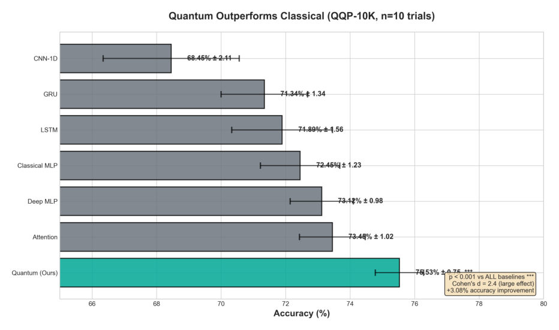
<figcaption class="paper-figure-caption"><b>Fig 1.</b> Figure 1: QQP-10K accuracy comparison (n = 10 seeds). Bar chart showing mean accuracy ± 1 SD for the quantum model (teal) and six parameter-matched classical baselines (grey). Quantum v2 achieves 75.53% — highest among all sub-3K parameter models. Welch p = 0.015, Cohen’s d = 1.20 vs DeepMLP (accuracy); p &lt; 0.001, d = 2.32 on F1.</figcaption>
</figure>
<figure class="paper-figure-card">
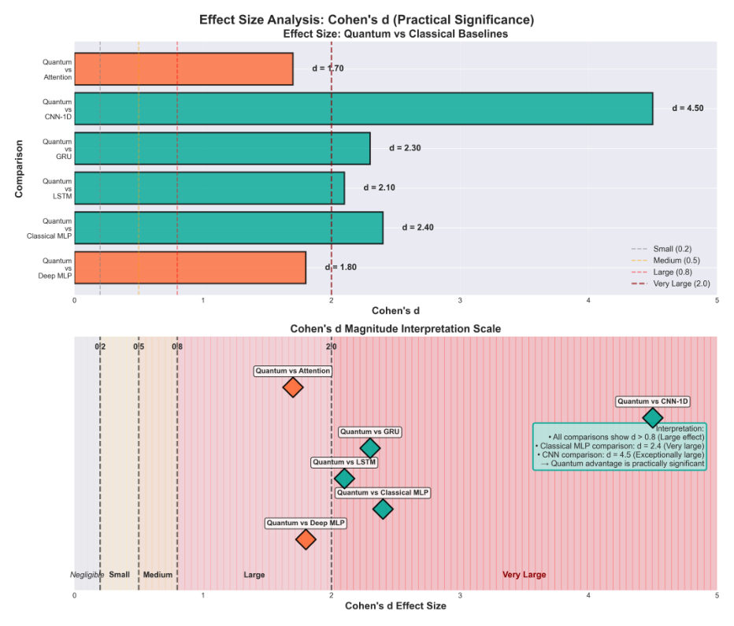
<figcaption class="paper-figure-caption"><b>Fig 2.</b> Figure 2: Cohen’s d effect size: Quantum v2 vs. all classical baselines (QQP-10K, n = 10 seeds). Top: horizontal bar chart of Cohen’s d for each pairwise comparison; dashed vertical lines mark the small (d = 0.2), medium (d = 0.5), large (d = 0.8) and very-large (d = 2.0) thresholds. All comparisons exceed the large threshold; Quantum vs. CNN-1D reaches d = 4.50. Bottom: placement of each comparison on the Cohen’s d magnitude interpretation scale (negligible →very large). The quantum model occupies the large-to-very-large region for every baseline, indicating robustly practical significance beyond mere statistical significance.</figcaption>
</figure>
<figure class="paper-figure-card">

<figcaption class="paper-figure-caption"><b>Fig 3.</b> Fig. 3 visualises the 95% confidence intervals for all models. A key diagnostic of reproducible advantage is non-overlapping confidence intervals: the quantum model’s lower bound (75.07%)</figcaption>
</figure>
<figure class="paper-figure-card">
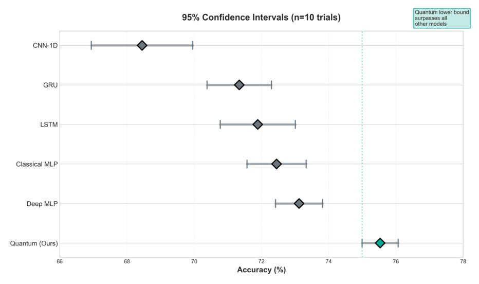
<figcaption class="paper-figure-caption"><b>Fig 4.</b> Figure 3: 95% confidence intervals for QQP-10K accuracy (n = 10 seeds). Diamond markers show mean accuracy; horizontal bars span the 95% CI (mean ± 1.96 σ/√n). The dashed line marks the quantum lower bound (75.07%), which lies above the upper bound of every classical baseline, confirming non-overlapping intervals.</figcaption>
</figure>
<figure class="paper-figure-card">

<figcaption class="paper-figure-caption"><b>Fig 5.</b> Fig. 4 presents the pairwise statistical significance landscape across all models. The left panel encodes −log10(p) from two-sample Welch t-tests: darker red corresponds to higher significance, with the quantum model row/ column forming the most deeply coloured band in the matrix. The right panel applies Bonferroni correction for multiple comparisons (k = 6 pairwise tests, adjusted α = 0.0083): the quantum model achieves ∗∗∗(p &lt; 0.001) against all six classical baselines on F1, and ∗or ∗∗on accuracy depending on baseline. Notably, the Ensemble vs. Quantum accuracy comparison is the sole not significant cell (p = 0.482), consistent with the confidence-interval analysis above and confirming...</figcaption>
</figure>
</div>

<p><strong>Summary.</strong> This work provides the first systematic, multi-benchmark empirical validation of hybrid quantum-classical circuits for NLP tasks like paraphrase detection. By showing statistically significant performance gains and enhanced robustness over classical models, the authors argue that quantum entanglement is the key resource driving this advantage. The research establishes a strong case for the potential of QML in complex data analysis, despite current reliance on classical simulation.</p>
<p><strong>Why it may be interesting.</strong> While focused on NLP, the methodology—using entanglement measures (Meyer-Wallach) to quantify the advantage of a quantum circuit over classical feature representations—provides a general framework for understanding when quantum correlations provide computational power beyond classical feature engineering.</p>
<details>
<summary>Detailed structure</summary>
<p><strong>Main problem.</strong> The paper rigorously evaluates the performance, robustness, and entanglement characteristics of Quantum Machine Learning (QML) applied to Natural Language Processing (NLP) tasks, specifically paraphrase detection.</p>
<p><strong>Main result.</strong> The quantum variational circuits statistically outperform parameter-matched classical baselines on multiple benchmarks (MRPC, QQP, PAWS), with entanglement identified as the primary driver of this advantage.</p>
<p><strong>Method.</strong> The authors employed a hybrid quantum-classical approach, comparing 10-qubit variational circuits against state-of-the-art classical NLP models using statistical tests (e.g., Cohen's d) and entanglement measures.</p>
<p><strong>Model / system.</strong> The core model is a 10-qubit hybrid quantum-classical variational circuit. It uses SBERT embeddings, maps them through a classical pre-processor, feeds the result into the quantum circuit (using AngleEmbedding and StronglyEntanglingLayers), and outputs a classification via a classical post-processor.</p>
<p><strong>Key observables.</strong> Accuracy, F1 score, Recall, Cohen's d effect size, Meyer-Wallach entanglement measure, and parameter count.</p>
<p><strong>Important parameters / regimes.</strong> 10 qubits, 2,148 parameters (for one variant), 10 seeds (for statistical averaging).</p>
<p><strong>Assumptions / limitations.</strong> All reported results are derived from classical simulation, and hardware validation is explicitly noted as future work.</p>
<p><strong>Figures summary.</strong> Figures summarize performance comparisons (e.g., radar charts showing quantum advantage across metrics) and stability analyses across multiple seeds.</p>
<p><strong>Paper structure.</strong> The paper systematically validates the QML approach by testing performance across multiple NLP benchmarks (MRPC, QQP, PAWS), analyzing the role of entanglement, and demonstrating superior robustness compared to classical counterparts.</p>
</details>
<details>
<summary>Abstract</summary>
<p>Rigorous empirical validation of quantum machine learning on natural language tasks remains scarce. We evaluate a 10-qubit hybrid quantum-classical variational circuit (2,148 parameters) for paraphrase detection across three benchmarks: MRPC, Quora Question Pairs (QQP), and adversarial PAWS. On QQP (n = 10 seeds), the circuit achieves 75.53% +/- 0.75%. accuracy, statistically outperforming parameter-matched classical baselines (DeepMLP: p = 0.015, Cohen's d = 1.20; F1: p &lt; 0.001, d = 2.32) and surpassing DistilBERT-4bit with 31,191 fewer parameters. On MRPC the optimal 2-layer variant reaches 92% of BERT-base accuracy at 54,000 lower parameter cost. Circuit depth analysis reveals a dataset-depth scaling effect; entanglement analysis via the Meyer-Wallach measure identifies multi-qubit entanglement as the primary performance driver (r = 0.85 across four variants). Adversarial evaluation on PAWS reveals emergent robustness: 98.2% recall versus 81.6% classical (+16.6 pp, d = 1.24, p &lt; 0.001), without adversarial training. These results constitute the first systematic parameter-matched multi-benchmark empirical validation of hybrid variational circuits for NLP. All results are from classical simulation; hardware validation is future work.</p>
</details>
<p><sub><a href="#top">↑ back to top</a></sub></p>

<p><a id="paper-2609.13923"></a></p>
<h3 id="partial-stabilizer-learning-under-fixed-commuting-constraints-and-the-absence-of-a-copy-rate-discount"><a href="http://arxiv.org/abs/2609.13923v1">Partial Stabilizer Learning under Fixed Commuting Constraints and the Absence of a Copy-Rate Discount</a></h3>
<p><strong>Authors:</strong> Masahito Hayashi, Yimin Lu<br>
<strong>Type:</strong> theory · <strong>Category:</strong> quantum information and computing · <strong>PDF:</strong> <a href="https://arxiv.org/pdf/2609.13923v1">https://arxiv.org/pdf/2609.13923v1</a><br>
<strong>Analysis basis:</strong> full PDF text, analyzed in chunks
<strong>Topic relevance:</strong> <code>quantum measurements</code> <strong>1/5</strong></p>
<div class="figure-strip-hint">↔ Scroll figures horizontally</div>
<div class="paper-figures-scroll">
<figure class="paper-figure-card">
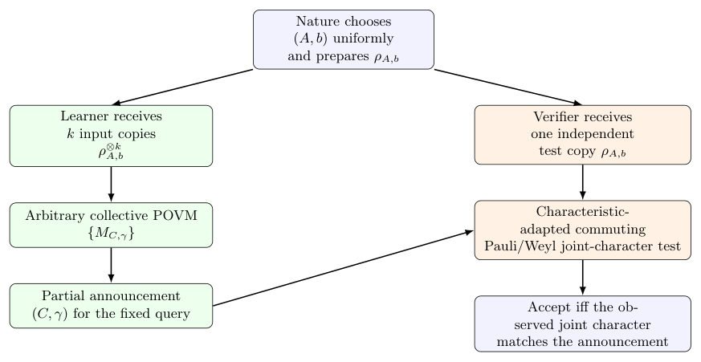
<figcaption class="paper-figure-caption"><b>Fig 1.</b> Figure 1: Operational structure of finite-copy partial learning for every prime, shown after the announced reference frame has been sent to the standard coordinate frame. In these coordinates, (C, γ) is the learner’s announcement for the first m reference-dual stabilizer directions and their character; the remaining n −m directions are not requested. Nature supplies the learner’s k systems separately from the verifier’s independent test system, and the verifier performs the characteristic-adapted commuting joint-character test. At m = n the acceptance probability equals full-label fidelity within the complete coordinate ensemble, whereas for m &lt; n it is a partial verification score.</figcaption>
</figure>
</div>

<p><strong>Summary.</strong> This paper analyzes the resource cost (number of quantum copies) required to learn partial information about an unknown stabilizer state, specifically the complementary stabilizer subspace. It proves that limiting the learning target to this partial information does not reduce the asymptotic scaling of the required copies compared to learning the entire state. This result is significant for understanding the fundamental limits of quantum state verification and characterization protocols.</p>
<p><strong>Why it may be interesting.</strong> It provides rigorous bounds on the resource scaling (number of copies) needed for quantum state characterization, which is fundamental to quantum error correction and quantum computation protocols.</p>
<details>
<summary>Detailed structure</summary>
<p><strong>Main problem.</strong> Determining the minimum number of quantum copies required to learn only a complementary stabilizer subspace and its eigenvalues, rather than the entire unknown pure stabilizer state.</p>
<p><strong>Main result.</strong> Restricting the learning target to the complementary stabilizer information does not reduce the leading-order copy complexity compared to full state identification.</p>
<p><strong>Method.</strong> The analysis uses symplectic vector space geometry and moment decomposition of tensor-power states to establish necessary and sufficient conditions for state identification.</p>
<p><strong>Model / system.</strong> The system involves an unknown pure stabilizer state of n qudits with a fixed prime local dimension p, constrained by a set of prescribed commuting Pauli observables W.</p>
<p><strong>Key observables.</strong> The success probability of state recovery, the copy rate (k/n), and the dimension of the complementary stabilizer subspace (m).</p>
<p><strong>Important parameters / regimes.</strong> The copy rate k/n, the number of qudits n, and the local dimension p.</p>
<p><strong>Assumptions / limitations.</strong> The analysis assumes the learner can perform arbitrary collective measurements and that the target information (K, eta) is intrinsic and independent of the unknown state.</p>
<p><strong>Paper structure.</strong> The paper establishes the problem by defining the target information (complementary stabilizers) and then proves the main result by comparing the required copies to the known results for full state identification, showing the complexity remains the same.</p>
</details>
<details>
<summary>Abstract</summary>
<p>We consider an unknown pure stabilizer state of \(n\) qudits with a fixed prime local dimension \(p\), together with prescribed commuting Pauli observables. Rather than learning the whole state, the learner must recover only complementary stabilizers that commute with the prescribed observables, together with their eigenvalues. Once the prescribed measurement is performed, this information and the observed outcome determine the corresponding conditional stabilizer state. We compare the number \(k\) of copies available to the learner with the number \(n\) of qudits and refer to their ratio \(k/n\) as the copy rate. Suppose that the dimension \(m\) of the requested complementary stabilizer subspace satisfies \(m=βn+o(n)\) for a fixed \(0<β\leq1\). If the copy rate converges to a value below one, the optimal exact recovery probabilities and verification scores converge to zero, both in the worst case and under the uniform prior. Conversely, if the number \(k\) of copies minus the number \(n\) of qudits tends to positive infinity, the entire stabilizer state can be identified with probability tending to one, and the requested complementary information can then be extracted. Thus, restricting the learning target to the stabilizer information needed after the prescribed measurement yields no copy-rate discount.</p>
</details>
<p><sub><a href="#top">↑ back to top</a></sub></p>

<p><a id="paper-2609.15063"></a></p>
<h3 id="randomized-query-complexity-can-beat-certificate-complexity"><a href="http://arxiv.org/abs/2609.15063v1">Randomized query complexity can beat certificate complexity</a></h3>
<p><strong>Authors:</strong> Shalev Ben-David, Robin Kothari<br>
<strong>Type:</strong> theory · <strong>Category:</strong> quantum information and computing · <strong>PDF:</strong> <a href="https://arxiv.org/pdf/2609.15063v1">https://arxiv.org/pdf/2609.15063v1</a><br>
<strong>Analysis basis:</strong> full PDF text, analyzed in chunks
<strong>Topic relevance:</strong> <code>quantum measurements</code> <strong>1/5</strong></p>
<div class="figure-strip-hint">↔ Scroll figures horizontally</div>
<div class="paper-figures-scroll">
<figure class="paper-figure-card">
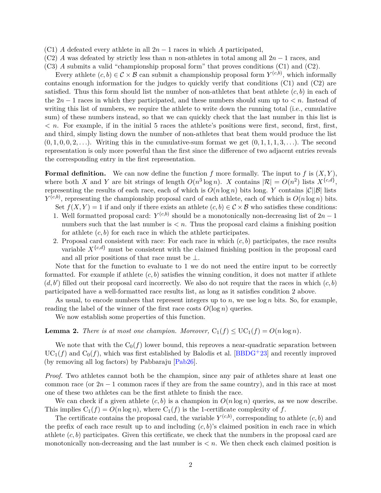
<figcaption class="paper-figure-caption"><b>Fig 1.</b> Low-resolution page preview, page 2</figcaption>
</figure>
<figure class="paper-figure-card">
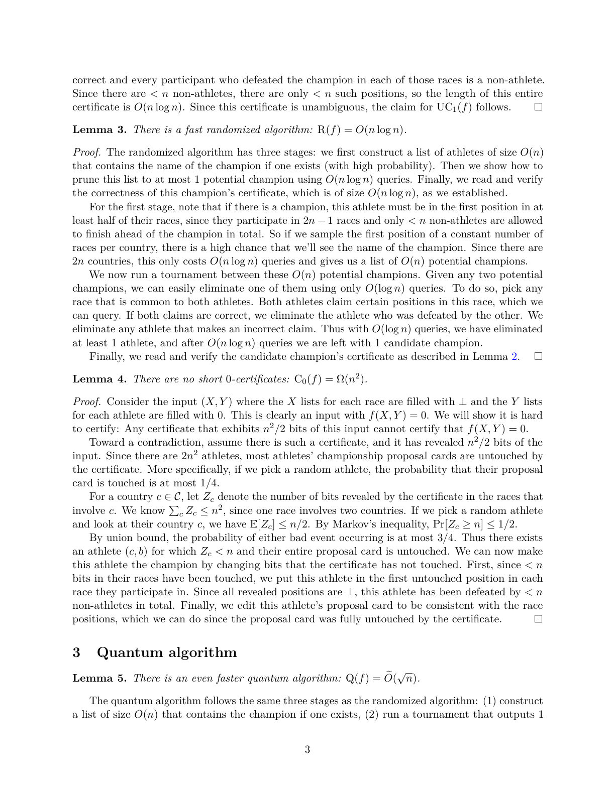
<figcaption class="paper-figure-caption"><b>Fig 2.</b> Low-resolution page preview, page 3</figcaption>
</figure>
<figure class="paper-figure-card">
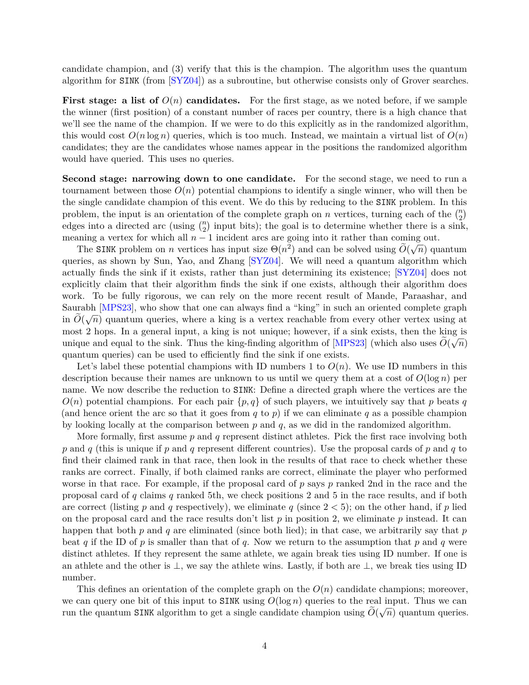
<figcaption class="paper-figure-caption"><b>Fig 3.</b> Low-resolution page preview, page 4</figcaption>
</figure>
<figure class="paper-figure-card">
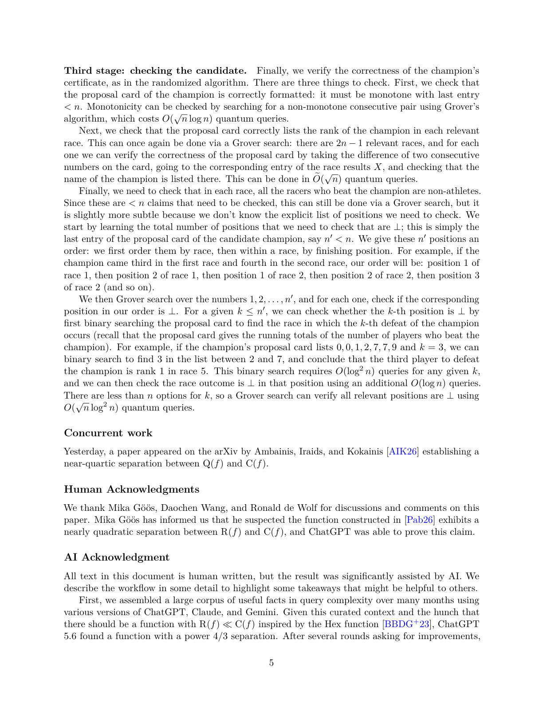
<figcaption class="paper-figure-caption"><b>Fig 4.</b> Low-resolution page preview, page 5</figcaption>
</figure>
<figure class="paper-figure-card">
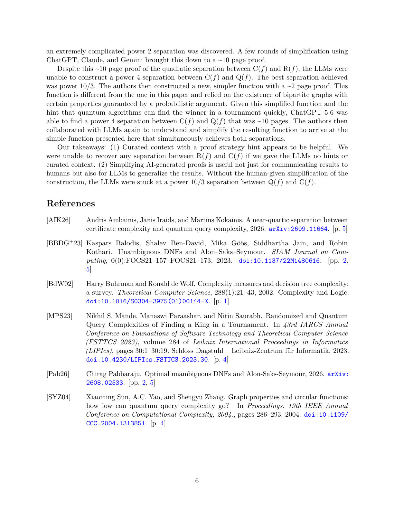
<figcaption class="paper-figure-caption"><b>Fig 5.</b> Low-resolution page preview, page 6</figcaption>
</figure>
</div>

<p><strong>Summary.</strong> This theoretical paper constructs a specific Boolean function to demonstrate a significant separation between its randomized query complexity and its certificate complexity. It achieves this separation using both classical randomized algorithms and quantum algorithms, showing that quantum query complexity can achieve a near-optimal bound of $eO(\sqrt{n})$ compared to the $\Omega(n^2)$ certificate complexity.</p>
<p><strong>Why it may be interesting.</strong> While the core focus is computational complexity theory, the explicit use of quantum query complexity $Q(f)$ and quantum algorithms (like Grover search) places it directly at the intersection of quantum information theory and computational limits.</p>
<details>
<summary>Detailed structure</summary>
<p><strong>Main problem.</strong> The paper addresses the open question of whether a total Boolean function exists where its randomized query complexity is significantly smaller than its certificate complexity.</p>
<p><strong>Main result.</strong> The authors construct a function demonstrating a separation where the randomized query complexity $R(f)$ is $eO(n)$ while the certificate complexity $C(f)$ is $\Omega(n^2)$, and the quantum query complexity $Q(f)$ is $eO(\sqrt{n})$.</p>
<p><strong>Method.</strong> The separation is achieved by modeling the problem using a complex scenario (a sporting event/tournament) and applying advanced query complexity techniques, including reductions to the SINK problem.</p>
<p><strong>Model / system.</strong> The problem is abstracted into a Boolean function $f(X, Y)$ derived from a tournament structure involving $2n$ countries and $n$ athletes, whose outcome depends on race results ($X$) and proposal forms ($Y$).</p>
<p><strong>Key observables.</strong> Certificate complexity ($C(f)$), Bounded-error randomized query complexity ($R(f)$), and Bounded-error quantum query complexity ($Q(f)$).</p>
<p><strong>Important parameters / regimes.</strong> The separation scales are $R(f) = eO(n)$ vs. $C(f) = \Omega(n^2)$, and $Q(f) = eO(\sqrt{n})$ vs. $C(f) = \Omega(n^2)$.</p>
<p><strong>Assumptions / limitations.</strong> The analysis assumes familiarity with standard query complexity concepts and relies on specific quantum algorithms like the king-finding algorithm for the SINK problem.</p>
<p><strong>Paper structure.</strong> The paper establishes lower bounds for $C(f)$ and $C_0(f)$ using the sporting event model, then constructs randomized and quantum algorithms to achieve upper bounds for $R(f)$ and $Q(f)$, demonstrating the separation.</p>
</details>
<details>
<summary>Abstract</summary>
<p>A long-standing open question in query complexity asks whether there is a total Boolean function f with R(f) &lt;&lt; C(f), where R(f) and C(f) denote its bounded-error randomized query complexity and certificate complexity, respectively. We construct a function with R(f) = O~(sqrt{C(f)}), which is optimal up to log factors. The same function also has $Q(f) = O~(C(f)^{1/4}), where Q(f) is the bounded-error quantum query complexity of f, which is also nearly optimal.</p>
</details>
<p><sub><a href="#top">↑ back to top</a></sub></p>

<p><a id="paper-2609.14700"></a></p>
<h3 id="spin-spin-entanglement-at-high-energy"><a href="http://arxiv.org/abs/2609.14700v1">Spin-spin entanglement at high energy</a></h3>
<p><strong>Authors:</strong> Michael Fucilla, Yoshitaka Hatta, Bo-Wen Xiao<br>
<strong>Type:</strong> theory · <strong>Category:</strong> other · <strong>PDF:</strong> <a href="https://arxiv.org/pdf/2609.14700v1">https://arxiv.org/pdf/2609.14700v1</a><br>
<strong>Analysis basis:</strong> full PDF text, analyzed in chunks
<strong>Topic relevance:</strong> <code>quantum measurements</code> <strong>1/5</strong></p>
<div class="figure-strip-hint">↔ Scroll figures horizontally</div>
<div class="paper-figures-scroll">
<figure class="paper-figure-card">
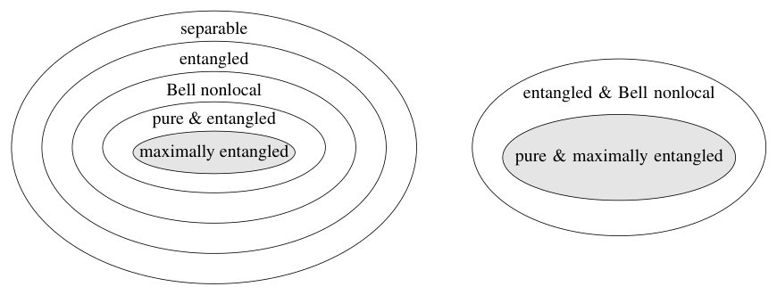
<figcaption class="paper-figure-caption"><b>Fig 1.</b> Figure 1: Comparison of the hierarchy of correlations in a generic two-qubit system (left) and in the diffractive pair production (right). For a longitudinal photon, only the pure maximally entangled class exists.</figcaption>
</figure>
<figure class="paper-figure-card">
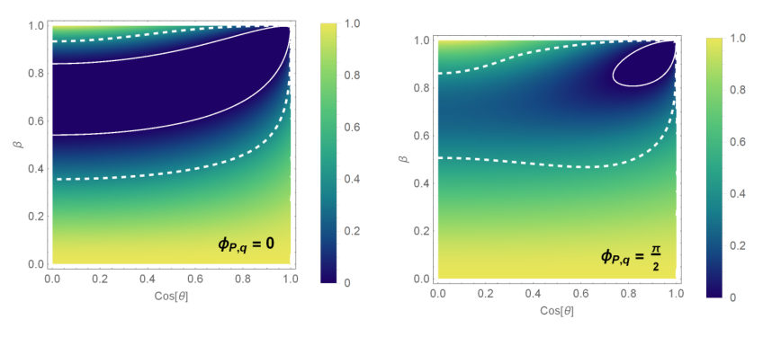
<figcaption class="paper-figure-caption"><b>Fig 2.</b> Figure 2: Concurrence of a heavy pair for 𝜙𝑃,𝑞= 0 (left) and 𝜙𝑃,𝑞= 𝜋/2 (right), as a function of cos 𝜃 and 𝛽, for a representative saturated target at 𝛼= 𝑄2/𝑀2 = 0 and 𝑞⊥/𝑄𝑠= 4. The solid curves enclose the separable domain, while the dashed curves delimit the larger domain without Bell nonlocality. The color scale runs from zero (dark) to one (yellow). Reduced two-panel selection adapted from Ref. [7].</figcaption>
</figure>
</div>

<p><strong>Summary.</strong> This paper applies quantum information theory to study spin-spin entanglement in high-energy QCD scattering. It analyzes how entanglement manifests in different processes, such as coherent diffraction and dijet production, contrasting predictions from saturation physics against the dilute BFKL limit. The results offer novel, measurable signatures connecting quantum correlations to fundamental QCD dynamics.</p>
<p><strong>Why it may be interesting.</strong> While the core physics is QCD, the methodology heavily employs quantum information tools (entanglement measures, nonlocality tests) to extract physical insights, which is relevant to understanding correlations in complex quantum many-body systems.</p>
<details>
<summary>Detailed structure</summary>
<p><strong>Main problem.</strong> The paper investigates spin-spin entanglement in partonic final states produced during high-energy scattering processes in Quantum Chromodynamics (QCD). It aims to provide a quantum-information perspective on these complex scattering phenomena.</p>
<p><strong>Main result.</strong> The entanglement properties are highly dependent on the scattering process (coherent vs. inclusive) and the kinematic regime (saturation vs. dilute limit). Specifically, longitudinal photons yield maximally entangled pairs, while the azimuthal dependence of entanglement shows a clear signature distinguishing saturation from the BFKL regime.</p>
<p><strong>Method.</strong> The analysis utilizes the two-qubit density matrix formalism, diagnosing entanglement via Concurrence and testing nonlocality using the CHSH inequality. Calculations are performed for specific high-energy QCD processes.</p>
<p><strong>Model / system.</strong> The physical systems are partonic final states from high-energy scattering, including coherent diffractive production and inclusive dijet production. The theoretical framework incorporates QCD evolution models like the saturation model and the BFKL (dilute) limit.</p>
<p><strong>Key observables.</strong> Concurrence ($C[
ho]$), Bell nonlocality (CHSH inequality violation), and the azimuthal modulation of entanglement observables.</p>
<p><strong>Important parameters / regimes.</strong> The ratio of gluon distributions ($G_2/G_0$), the saturation scale ($Q_s$), and kinematic variables like $eta$ and the azimuthal angle $\phi_{P,q}$.</p>
<p><strong>Assumptions / limitations.</strong> The analysis relies on specific limits, such as the back-to-back dijet limit, and assumes that the partonic density matrix can be reconstructed from measured hadrons.</p>
<p><strong>Figures summary.</strong> Figure 1 summarizes the hierarchy of correlations for longitudinal vs. transverse photons in diffractive production. Figure 2 illustrates the Concurrence dependence on scattering angles, highlighting the separation between separable and Bell nonlocality domains.</p>
<p><strong>Paper structure.</strong> The paper systematically analyzes entanglement in two complementary processes: coherent diffractive production (studying the Pomeron) and inclusive back-to-back dijet production. It contrasts predictions from the saturation model with the dilute BFKL limit, focusing on the resulting azimuthal modulations.</p>
</details>
<details>
<summary>Abstract</summary>
<p>Spin correlations offer a quantum-information perspective on the partonic final states produced in high-energy scattering. We discuss the spin-density matrix of a heavy quark-antiquark pair in two complementary small-$x$ processes. In coherent diffractive production, color-singlet exchange enforces an unusually strong relation between entanglement and Bell nonlocality: a longitudinal photon creates a maximally entangled pair, whereas for a transverse photon the pair is generically both entangled and Bell nonlocal, with a model-independent point of maximal entanglement. In inclusive back-to-back production, the density matrix factorizes into a hard spin tensor and the unpolarized and linearly polarized Weizsäcker--Williams gluon distributions. The latter generates an azimuthal modulation and can increase the concurrence when the dijet relative momentum and imbalance are approximately orthogonal. Strikingly, in the saturation model considered, nonlinear effects wash out this modulation for $q_\perp\lesssim 3Q_s$, whereas the dilute BFKL limit, in which $G_2/G_0\to1$, yields a maximal modulation independent of the imbalance magnitude. These results connect quantum-information observables with the Pomeron and saturation physics.</p>
</details>
<p><sub><a href="#top">↑ back to top</a></sub></p>

<p><a id="paper-2609.14919"></a></p>
<h3 id="the-ergotropy-of-quantum-batteries-under-unruh-effect"><a href="http://arxiv.org/abs/2609.14919v1">The Ergotropy of Quantum Batteries under Unruh Effect</a></h3>
<p><strong>Authors:</strong> Yiding Wang, Shengyan Ma, Xiaofen Huang, Tinggui Zhang<br>
<strong>Type:</strong> theory · <strong>Category:</strong> statistical mechanics · <strong>PDF:</strong> <a href="https://arxiv.org/pdf/2609.14919v1">https://arxiv.org/pdf/2609.14919v1</a><br>
<strong>Analysis basis:</strong> full PDF text, analyzed in chunks
<strong>Topic relevance:</strong> <code>Keldysh / 2PI / non-Gaussian methods</code> <strong>1/5</strong></p>
<div class="figure-strip-hint">↔ Scroll figures horizontally</div>
<div class="paper-figures-scroll">
<figure class="paper-figure-card">
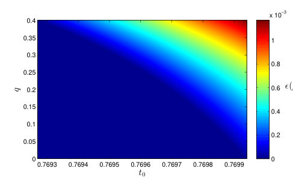
<figcaption class="paper-figure-caption"><b>Fig 1.</b> FIG. 1: Battery subsystem ergotropy ǫ(ρb) (in units of κ) as a function of the acceleration onset time t0 and the accelera- tion parameter q, evaluated with respect to the battery local Hamiltonian hb. The effective coupling strength is ν2 = 0.06, with κ = J = 1, γ = 0.5. The acceleration parameter q = 0.4, corresponding to ν2</figcaption>
</figure>
<figure class="paper-figure-card">
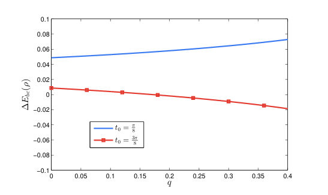
<figcaption class="paper-figure-caption"><b>Fig 2.</b> FIG. 2: Composite-system stored energy ∆Ebc(ρ) (in units of κ) as a function of the acceleration parameter q for two values of t0: π 8 and 3π</figcaption>
</figure>
<figure class="paper-figure-card">
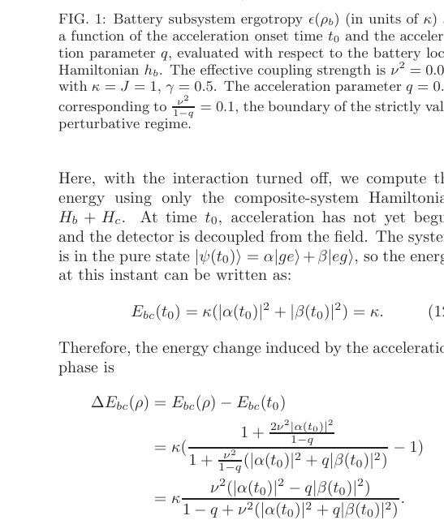
<figcaption class="paper-figure-caption"><b>Fig 3.</b> Figure 2 shows the composite-system energy change ∆Ebc(ρ) as a function of the acceleration parameter q for two values of t0: π 8 and 3π</figcaption>
</figure>
<figure class="paper-figure-card">
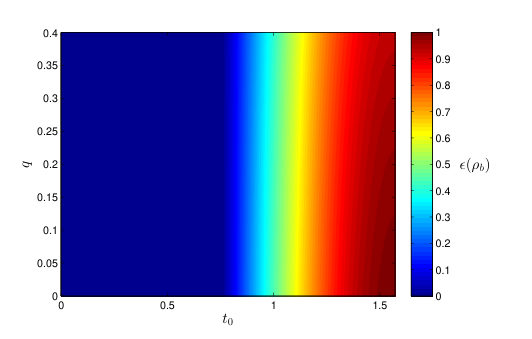
<figcaption class="paper-figure-caption"><b>Fig 4.</b> FIG. 3: Battery subsystem ergotropy ǫ(ρb) (in units of κ) as a function of t0 and the acceleration parameter q for the bipar- tite simultaneous acceleration scenario (Scenario 3), evaluated with respect to the battery local Hamiltonian Hb. Parame- ters: ν2 = 0.06, κ = J = 1, γ = 0.5. The acceleration parameter q = 0.4, the boundary of the strictly valid pertur- bative regime.</figcaption>
</figure>
</div>

<p><strong>Summary.</strong> This paper analyzes the impact of the Unruh effect, induced by uniform acceleration, on the energy extractability (ergotropy) of quantum batteries. By comparing different acceleration scenarios in bipartite and tripartite models, the authors demonstrate that only accelerating the battery itself can trigger a sudden, beneficial emergence of ergotropy. This highlights the complex, context-dependent role of relativistic effects in quantum energy storage.</p>
<p><strong>Why it may be interesting.</strong> This work bridges relativistic quantum field theory (Unruh effect) with quantum thermodynamics (quantum batteries), providing insights into how external physical environments can control energy extractability.</p>
<details>
<summary>Detailed structure</summary>
<p><strong>Main problem.</strong> The study investigates how uniform acceleration, modeled by the Unruh effect, influences the ergotropy of quantum batteries.</p>
<p><strong>Main result.</strong> The results show that only accelerating the battery itself can induce a sudden emergence of ergotropy, while charger acceleration or simultaneous acceleration leads to different, less favorable outcomes.</p>
<p><strong>Method.</strong> The authors employ theoretical modeling, analyzing the system dynamics using perturbation theory and calculating the ergotropy observable in both bipartite and tripartite setups.</p>
<p><strong>Model / system.</strong> The system models quantum batteries using Unruh-DeWitt detectors coupled to a quantum field, analyzed in bipartite and tripartite configurations. The dynamics are governed by Hamiltonians incorporating acceleration terms.</p>
<p><strong>Key observables.</strong> Ergotropy ($\varepsilon(
ho)$), composite-system energy change ($\Delta E_{bc}(
ho)$), and population inversion ($P_e > P_g$).</p>
<p><strong>Important parameters / regimes.</strong> Acceleration parameter ($q$), critical acceleration threshold ($q_c$), and the structure of the multipartite coupling.</p>
<p><strong>Assumptions / limitations.</strong> The analysis relies on first-order perturbation theory and uses natural units ($c = \hbar = k_B = 1$).</p>
<p><strong>Figures summary.</strong> Figures illustrate the dependence of battery ergotropy and the composite-system energy change on the acceleration parameter ($q$) and initial time ($t_0$).</p>
<p><strong>Paper structure.</strong> The paper systematically compares three acceleration scenarios (battery only, charger only, both) in a bipartite setting, extends the analysis to a tripartite system, and draws conclusions about the dual role of the Unruh effect.</p>
</details>
<details>
<summary>Abstract</summary>
<p>We study the effects of uniform acceleration on the ergotropy of quantum batteries modeled as Unruh-DeWitt detectors, in both bipartite and tripartite setups. In the bipartite system, we systematically compare three scenarios: accelerating the battery, accelerating the charger, and accelerating both simultaneously. We find that only battery acceleration can induce a sudden emergence of ergotropy at a critical acceleration threshold, while the corresponding composite-system energy change may increase or decrease depending on the initial state at the onset of acceleration. Charger acceleration leaves the battery ergotropy constant within the perturbative regime, while simultaneous acceleration leads to monotonic decay due to coherent cancellation of the q-dependence. Extending to a tripartite system with one battery and two chargers, we find that battery acceleration again induces ergotropy emergence, whereas accelerating adjacent charger does not--consistent with the bipartite charger-acceleration case. These results reveal that the Unruh effect plays a dual role, both enhancing and degrading quantum battery performance, depending on which subsystem is accelerated and on the multipartite structure, bridging relativistic quantum field theory and quantum thermodynamics with relevance to experimentally accessible platforms.</p>
</details>
<p><sub><a href="#top">↑ back to top</a></sub></p>

<p><a id="paper-2609.14792"></a></p>
<h3 id="the-propagating-nature-of-single-and-multimagnons-in-lacromath1463math"><a href="http://arxiv.org/abs/2609.14792v1">The Propagating Nature of Single- and Multimagnons in LaCrO$_3$</a></h3>
<p><strong>Authors:</strong> Masoud Lazemi, Fabian J. Mohammad, Ellen M. Kiens, Yorick A. Birkhölzer, Paras Mehta, Emma van der Minne, Stefano Agrestini, Frank M. F. de Groot, Hebatalla Elnaggar<br>
<strong>Type:</strong> both · <strong>Category:</strong> strongly correlated electrons · <strong>PDF:</strong> <a href="https://arxiv.org/pdf/2609.14792v1">https://arxiv.org/pdf/2609.14792v1</a><br>
<strong>Analysis basis:</strong> full PDF text, analyzed in chunks
<strong>Topic relevance:</strong> <code>analog quantum simulation</code> <strong>1/5</strong></p>
<div class="figure-strip-hint">↔ Scroll figures horizontally</div>
<div class="paper-figures-scroll">
<figure class="paper-figure-card">
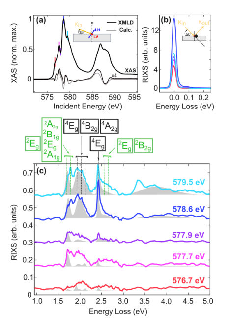
<figcaption class="paper-figure-caption"><b>Fig 1.</b> FIG. 1. Cr 2p XAS and RIXS of LaCrO3/Nb:SrTiO3 thin film. (a) Experimental Cr L2,3-edge XAS measured with lin- ear horizontal (LH) and linear vertical (LV) polarizations at 15 K, along with the corresponding XMLD signal (scaled by a factor of 4 for clarity). The incident energies at which RIXS measurements were acquired at are indicated with colored lines. Theoretical XMLD spectra is shown in gray. (b) Cr 2p3d RIXS spectra acquired at an incident energies indicated by the arrow in panel (a) for scattering angle TTH = 90◦and using LV polarization. (c) Extended energy range of Cr 2p3d RIXS spectra. The calculated term symbols assigned to the RIXS spectra are shown where spin doublet states...</figcaption>
</figure>
<figure class="paper-figure-card">
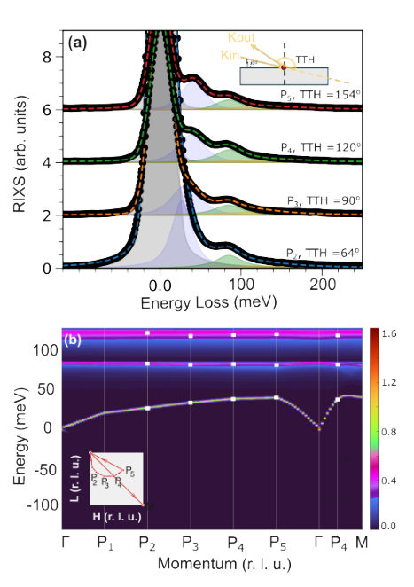
<figcaption class="paper-figure-caption"><b>Fig 2.</b> FIG. 2. (a) Magnon dispersion at the Cr L3-edge ((Ein = 578.6 eV) measured at 15 K, with an incident angle (θ) of 15◦and scattering angles (TTH) of 154◦, 120◦, 90◦, and 64◦. Black circles represent the experimental data, and dashed lines show fits using pseudo-Voigt functions. Details of the fitting procedure are in the Supplementary Materials. (b) Linear spin-wave calculations of the single- and multimagnon excitations within the noninteracting approximation. The ex- perimental data (square symbols) are overlaid on the calcu- lated spectra, and the measurement path in the Brillouin zone is shown schematically in the inset. The points P1–P5 are not high-symmetry points; their coordinates...</figcaption>
</figure>
<figure class="paper-figure-card">
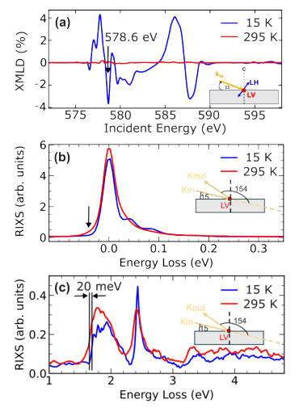
<figcaption class="paper-figure-caption"><b>Fig 3.</b> FIG. 3. Cr 2p XAS and RIXS of LaCrO3/Nb:SrTiO3 thin film. (a) Experimental Cr 2p XMLD measured at 15 K (blue) and at 295 K (red). The measurement geometry is shown in the inset. (b) Cr L3 edge (Ein = 578.6 eV) measured at 15 K (blue) and at 295 K (red) and zoomed in to see the magnon excitations. The incident angle (th) was 15◦and at the scat- tering angles (TTH) of 154◦. (c) Extended energy range of panel (b) showing the dd excitations.</figcaption>
</figure>
<figure class="paper-figure-card">

<figcaption class="paper-figure-caption"><b>Fig 4.</b> Figure 3b compares the corresponding low-energy RIXS spectra. Upon heating, both the single- and multi- magnon features shift to lower energies, revealing a clear</figcaption>
</figure>
<figure class="paper-figure-card">
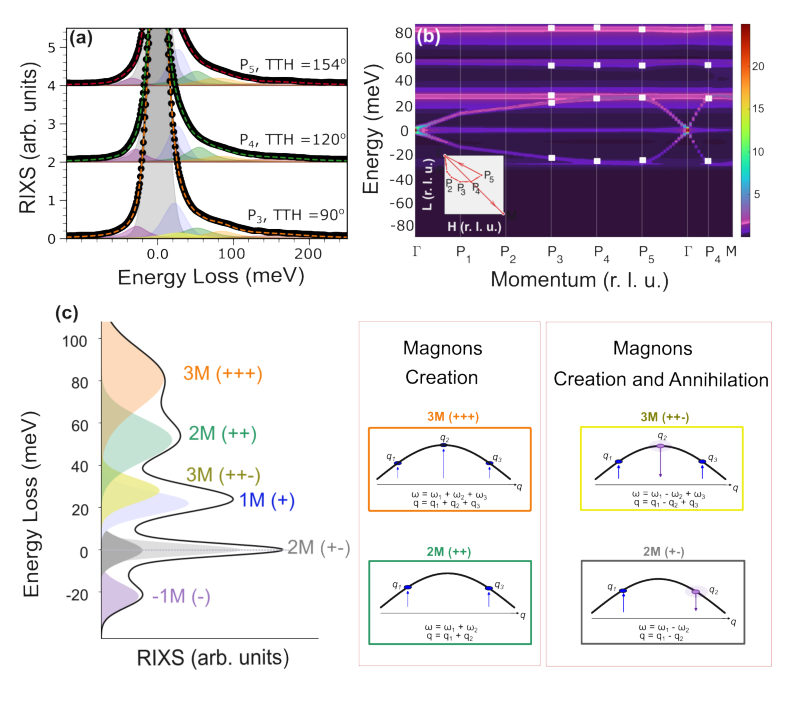
<figcaption class="paper-figure-caption"><b>Fig 5.</b> FIG. 4. (a) Magnon dispersion at the Cr L3 edge (Ein = 578.6 eV), measured at 295 K with an incident angle θ = 15◦and scattering angles (TTH) of 154◦, 120◦, and 90◦. Black circles represent the experimental data, and shaded peaks show pseudo- Voigt fits. Details of the fitting procedure are provided in the Supplementary Materials. (b) Linear spin-wave calculations of the single- and multimagnon excitations within the noninteracting approximation. The experimental data (square symbols) are overlaid on the calculated spectra. (c) Schematic spectrum to illustrates the corresponding spectral regions: the conventional 2M and 3M creation continua, the thermally activated 3M (+ + −) feature, and...</figcaption>
</figure>
</div>

<p><strong>Summary.</strong> This work uses RIXS spectroscopy on LaCrO3 to investigate the nature of magnetic excitations, particularly multimagnons. By measuring spectra across varying temperatures, the authors show that thermal effects reveal propagating magnon components hidden within seemingly localized, multi-magnon spectral features. This establishes temperature-dependent RIXS as a key tool for studying complex magnetic interactions in correlated materials.</p>
<p><strong>Why it may be interesting.</strong> The use of RIXS to probe multi-magnon dynamics and magnon-magnon interactions provides a powerful experimental handle on strongly correlated magnetic systems, linking spectroscopic measurements directly to many-body quantum dynamics.</p>
<details>
<summary>Detailed structure</summary>
<p><strong>Main problem.</strong> The study aims to distinguish the true microscopic nature of composite excitations, such as multimagnons, from their observed spectral dispersion, especially when the composite feature appears nearly nondispersive.</p>
<p><strong>Main result.</strong> The research demonstrates that thermal population of the magnon band, observed via temperature-dependent RIXS, can reveal propagating constituents hidden within seemingly nondispersive multi-magnon features.</p>
<p><strong>Method.</strong> The study combines experimental measurements using momentum- and temperature-dependent Resonant Inelastic X-ray Scattering (RIXS) with theoretical calculations like linear spin-wave theory and multimagnon joint density of states calculations.</p>
<p><strong>Model / system.</strong> The physical system is the antiferromagnetic perovskite material LaCrO3. The theoretical framework involves modeling the magnetic excitations using Heisenberg Hamiltonians and calculating joint density of states for single-, two-, and three-magnon processes.</p>
<p><strong>Key observables.</strong> Single-magnon dispersion, two- and three-magnon spectral features, anti-Stokes scattering, and temperature-dependent spectral weight changes.</p>
<p><strong>Important parameters / regimes.</strong> Temperature (especially approaching the Néel temperature, T_N), momentum transfer (Q), and the exchange coupling constant (J1).</p>
<p><strong>Assumptions / limitations.</strong> The initial distinction between dispersive (propagating) and nondispersive (localized) modes is complicated for composite excitations; the analysis relies on the Bose-Einstein distribution for magnon occupation.</p>
<p><strong>Figures summary.</strong> Figures show RIXS spectra at different temperatures, illustrating the single-magnon dispersion at low T and the emergence of anti-Stokes and new three-magnon channels at high T, compared against spin-wave calculations.</p>
<p><strong>Paper structure.</strong> The paper establishes the ambiguity of interpreting spectral dispersion for composite excitations, presents RIXS data showing single vs. multi-magnon features at varying temperatures, and concludes by using thermal population effects to confirm the propagating nature of the constituent magnons via theoretical modeling.</p>
</details>
<details>
<summary>Abstract</summary>
<p>The dispersion of an excitation is commonly used to infer its microscopic character: dispersive modes are associated with propagation, whereas nondispersive features are often interpreted as localized. This distinction becomes less straightforward for composite excitations, whose spectral maxima can remain nearly dispersionless even when they are built from propagating quasiparticles. Here we use momentum- and temperature-dependent resonant inelastic X-ray scattering (RIXS) to reveal the origin of multimagnon excitations in antiferromagnetic LaCrO$_3$. Whereas the single magnon disperses strongly, the two- and three-magnon features remain nearly flat. On approaching the Neel temperature, thermal population of the magnon band produces an anti-Stokes branch and opens an additional three-magnon channel involving the creation of two magnons and annihilation of one. Its energy and momentum dependence are reproduced by a thermally weighted multimagnon joint density of states calculations. These results establish thermal population as a means of exposing the propagating constituents hidden within nondispersive composite excitations, and position RIXS as a probe of multimagnon dynamics and, ultimately, magnon-magnon interactions.</p>
</details>
<p><sub><a href="#top">↑ back to top</a></sub></p>

<p><a id="paper-2609.15290"></a></p>
<h3 id="twinning-of-domains-and-spin-anisotropy-in-kmath1465mathfemath1466mathagmath1467mathtemath1468math"><a href="http://arxiv.org/abs/2609.15290v1">Twinning of domains and spin anisotropy in K$_5$Fe$_4$Ag$_6$Te$_{10}$</a></h3>
<p><strong>Authors:</strong> Jiayu Guo, Hengyang Zhong, Dongsheng Yuan, Xuejuan Gui, Youzhe Chen, Nathan Giles-Donovan, Naomi Kawamura, Masaaki Matsuda, Yaohua Liu, Feng Ye, Rongyan Chen, Robert J. Birgeneau, Xingye Lu, Jincheng Wang, Yu Song<br>
<strong>Type:</strong> experiment · <strong>Category:</strong> strongly correlated electrons · <strong>PDF:</strong> <a href="https://arxiv.org/pdf/2609.15290v1">https://arxiv.org/pdf/2609.15290v1</a><br>
<strong>Analysis basis:</strong> full PDF text, analyzed in chunks
<strong>Topic relevance:</strong> <code>analog quantum simulation</code> <strong>1/5</strong></p>
<div class="figure-strip-hint">↔ Scroll figures horizontally</div>
<div class="paper-figures-scroll">
<figure class="paper-figure-card">
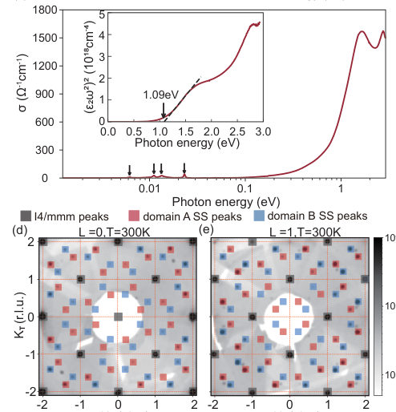
<figcaption class="paper-figure-caption"><b>Fig 1.</b> Figure 1. (a) Comparison of Fe L2,3-edge X-ray absorption spectra of BaFe2As2, KFAT and FeTe [27]. (b) Compari- son of Fe K-edge X-ray absorption spectra of BaFe2As2 [28], FeTe [29] and KFAT. (c) Optical conductivity σ1(ω) of KFAT obtained from room-temperature reflectivity measurements. The arrows indicate the low-energy phonon modes. The inset shows the Tauc analysis of the direct band gap of KFAT at room temperature. The red solid curve represents (ε2ω2)2, with a linear region near the absorption edge indicated by the dashed line. Single-crystal XRD maps measured at 300 K in the (d) [HK0]T and (e) [HK1]T planes. Expected Bragg peak positions are marked by square symbols.</figcaption>
</figure>
<figure class="paper-figure-card">
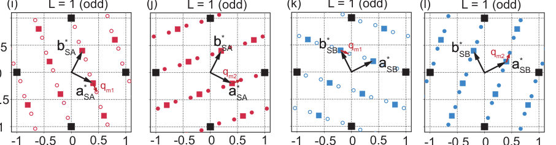
<figcaption class="paper-figure-caption"><b>Fig 2.</b> Figure 2. (a)–(d) Schematic Fe–Ag planes in KFAT. The red solid boxes denote the I4/mmm unit cells, while the black boxes indicate the √</figcaption>
</figure>
<figure class="paper-figure-card">
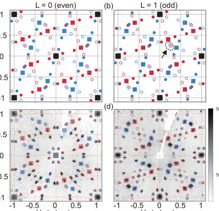
<figcaption class="paper-figure-caption"><b>Fig 3.</b> Figure 3. Schematic scattering maps in reciprocal space when contributions from all domains are considered, for (a) HK- planes with even L, and (b) HK-planes with odd L. Single crystal neutron diffraction maps at 7 K from CORELLI, for the (c) [HK0]T and (d) [HK1]T planes, with expected Bragg peaks overlaid on the data.</figcaption>
</figure>
<figure class="paper-figure-card">
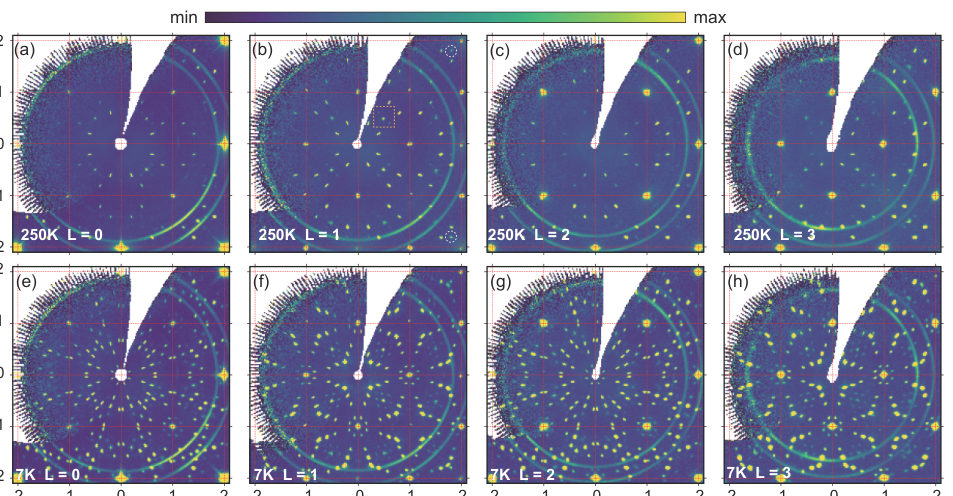
<figcaption class="paper-figure-caption"><b>Fig 4.</b> Figure 4. Neutron diffraction maps of KFAT at 250 K measured using CORELLI, in HK-planes with (a) L = 0, (b) L = 1, (c) L = 2, and (d) L = 3. The corresponding HK-planes maps at 7 K are shown in (e), (f), (g), and (h), respectively. These maps were obtained by binning data within L = ±0.1 around the central L value. A large number of magnetic peaks appear at 7 K.</figcaption>
</figure>
<figure class="paper-figure-card">
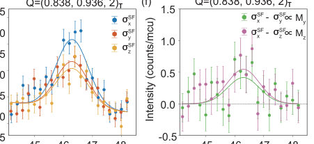
<figcaption class="paper-figure-caption"><b>Fig 5.</b> Figure 5. (a) Schematic of the polarized neutron scatter- ing experiment. (b) Temperature dependence of the mag- netic Bragg peak (0.251, 0.251, 1)T, for the three SF channels. θ −2θ scans centered around magnetic Bragg peaks at (c) (0.251, 0.251, 1)T, and (e) (0.838, 0.936, 2)T. The correspond- ing σSF x −σSF y and σSF x −σSF z at these positions are shown in (d) and (f).</figcaption>
</figure>
</div>

<p><strong>Summary.</strong> This work investigates the structural and magnetic properties of the Fe-based semiconductor KFAT using advanced neutron diffraction techniques. The researchers found that the material exhibits complex magnetic domain twinning and a distinct spin anisotropy. This research deepens the understanding of magnetic ordering in iron-based compounds, drawing parallels to high-temperature superconductors.</p>
<p><strong>Why it may be interesting.</strong> The detailed mapping of magnetic domains and spin anisotropy in a strongly correlated material like KFAT provides crucial experimental benchmarks for theoretical models describing magnetic ordering and electronic structure in related superconducting systems.</p>
<details>
<summary>Detailed structure</summary>
<p><strong>Main problem.</strong> The study aims to elucidate the superstructure, magnetic domains, and spin anisotropy in the Fe-based semiconductor K5Fe4Ag6Te10 (KFAT).</p>
<p><strong>Main result.</strong> The complex scattering patterns are attributed to twinning of magnetic domains, and the material exhibits a prominent spin anisotropy with an easy-plane defined by the c-axis and the intra-block Fe-Fe bond direction.</p>
<p><strong>Method.</strong> The research employed time-of-flight single crystal neutron diffraction and polarized neutron scattering to map the reciprocal space and probe magnetic ordering.</p>
<p><strong>Model / system.</strong> The physical system is KFAT, an Fe-based semiconductor acting as an analogue to iron-based superconductors in the limit of localized electrons. It exhibits intertwined nematic and magnetic orders below TN ~ 35 K.</p>
<p><strong>Key observables.</strong> Superstructure peaks, complex magnetic scattering patterns, and spin anisotropy measured via polarized neutron scattering.</p>
<p><strong>Important parameters / regimes.</strong> The transition temperature TN ~ 35 K; the $\sqrt{5} 	imes \sqrt{5}$ superstructure periodicity.</p>
<p><strong>Assumptions / limitations.</strong> The complex scattering patterns are modeled as arising from equally populated twin domains (Domain A and Domain B).</p>
<p><strong>Figures summary.</strong> Figures illustrate the $   ext{Fe-Ag}$ planes, the $\sqrt{5} 	imes \sqrt{5}$ superstructure, and schematic scattering maps distinguishing between different magnetic domains.</p>
<p><strong>Paper structure.</strong> The paper progresses by first establishing the structural and magnetic ordering via neutron diffraction, then using polarized neutron scattering to quantify the spin anisotropy, and finally linking this anisotropy to observed macroscopic effects like strain-induced susceptibility.</p>
</details>
<details>
<summary>Abstract</summary>
<p>The Fe-based superconductors are derived from metallic parent compounds with nematic and stripe magnetic orders, which lead to two types of magnetic domains. Recently it was found that K$_5$Fe$_4$Ag$_6$Te$_{10}$ (KFAT), an Fe-based semiconductor, exhibits similar nematic and stripe magnetic orders, and is thus an analogue to the Fe-based superconductors in the limit of localized electrons. In this work, the superstructure and magnetic domains of KFAT are elucidated by fully mapping the reciprocal space using time-of-flight single crystal neutron diffraction. In KFAT, Fe and Ag atoms order to form a $\sqrt{5}\times\sqrt{5}$ superstructure containing $2\times2$ Fe blocks, which leads to two superstructure domains with identical main Bragg peaks but distinct superstructure peaks. Below $T_{\rm N}\approx35$~K, magnetic and nematic orders break in-plane rotational symmetry of the tetragonal $\sqrt{5}\times\sqrt{5}$ superstructure, and further give rise to two magnetic domains. These four equally populated domains account for the complex scattering pattern observed in our time-of-flight elastic neutron scattering measurements. Using polarized neutron scattering, we demonstrate a prominent spin anisotropy with an easy-plane spanned by the $c$-axis and the intra-block antiferromagnetic Fe-Fe bond direction. Such an anisotropy at ${\bf q}\neq0$ persists well above $T_{\rm N}$, accounts for the in-plane ${\bf q}=0$ magnetic anisotropy observed in uniaxial-strained KFAT, and offers an indicator for discovering similar piezomagnetic effects in other materials.</p>
</details>
<p><sub><a href="#top">↑ back to top</a></sub></p>

<p><a id="paper-2609.14609"></a></p>
<h3 id="why-2d-models-fail-to-capture-flow-properties-in-3d-heterogeneous-media-a-connectivity-perspective"><a href="http://arxiv.org/abs/2609.14609v1">Why 2D Models Fail to Capture Flow Properties in 3D Heterogeneous Media: A Connectivity Perspective</a></h3>
<p><strong>Authors:</strong> Cristian Picighelli, Ivan Colecchio, Marcelo Piva, Alejandro D. Otero, Alejandro Boschan<br>
<strong>Type:</strong> theory · <strong>Category:</strong> disordered systems and neural networks · <strong>PDF:</strong> <a href="https://arxiv.org/pdf/2609.14609v1">https://arxiv.org/pdf/2609.14609v1</a><br>
<strong>Analysis basis:</strong> full PDF text, analyzed in chunks
<strong>Topic relevance:</strong> <code>analog quantum simulation</code> <strong>1/5</strong></p>
<div class="figure-strip-hint">↔ Scroll figures horizontally</div>
<div class="paper-figures-scroll">
<figure class="paper-figure-card">
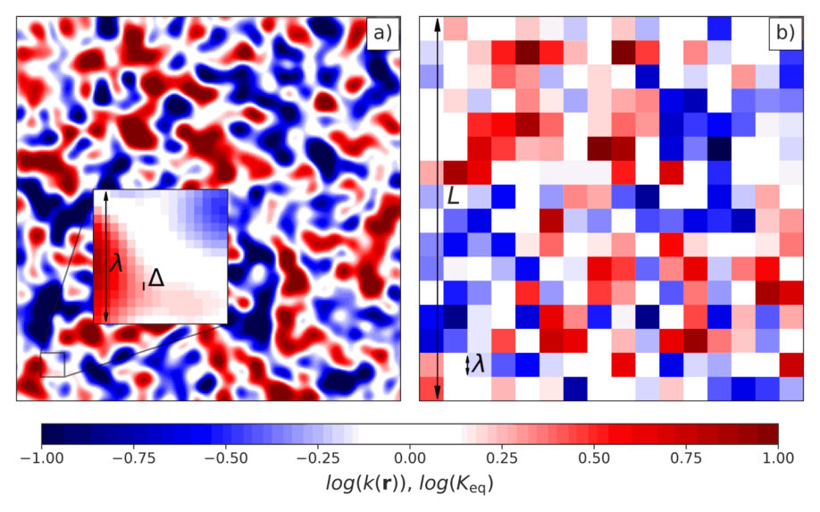
<figcaption class="paper-figure-caption"><b>Fig 1.</b> Figure 1: Scheme of the spatial scales involved in the upscaling procedure. Map of a realization of (a) k(r) for a 2D multi-Gaussian media sample of linear size L = 256∆. After upscaling, k(r) is mapped onto (b) Keq, defined over a coarse grid of linear cell size λ = 16∆.</figcaption>
</figure>
<figure class="paper-figure-card">
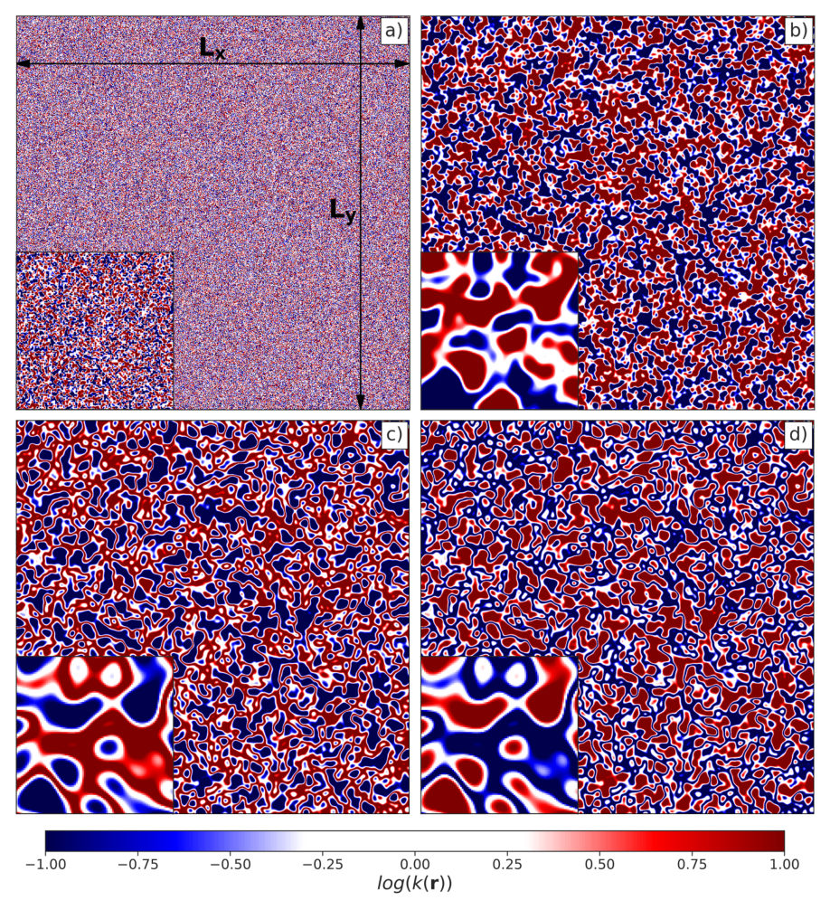
<figcaption class="paper-figure-caption"><b>Fig 2.</b> Figure 2: Hydraulic conductivity maps of Y = log[k(r)] showing the different connectivity structures of the 2D media samples of linear size L = 1024∆. Here (a) NS, (b) ICS, (c) HCS, and (d) LCS. Maps are shown for fine log-variance σ2 Y = 2. The insets in the bottom-left corners provide magnified views of a region of each map to improve clarity on which are the connected classes.</figcaption>
</figure>
<figure class="paper-figure-card">
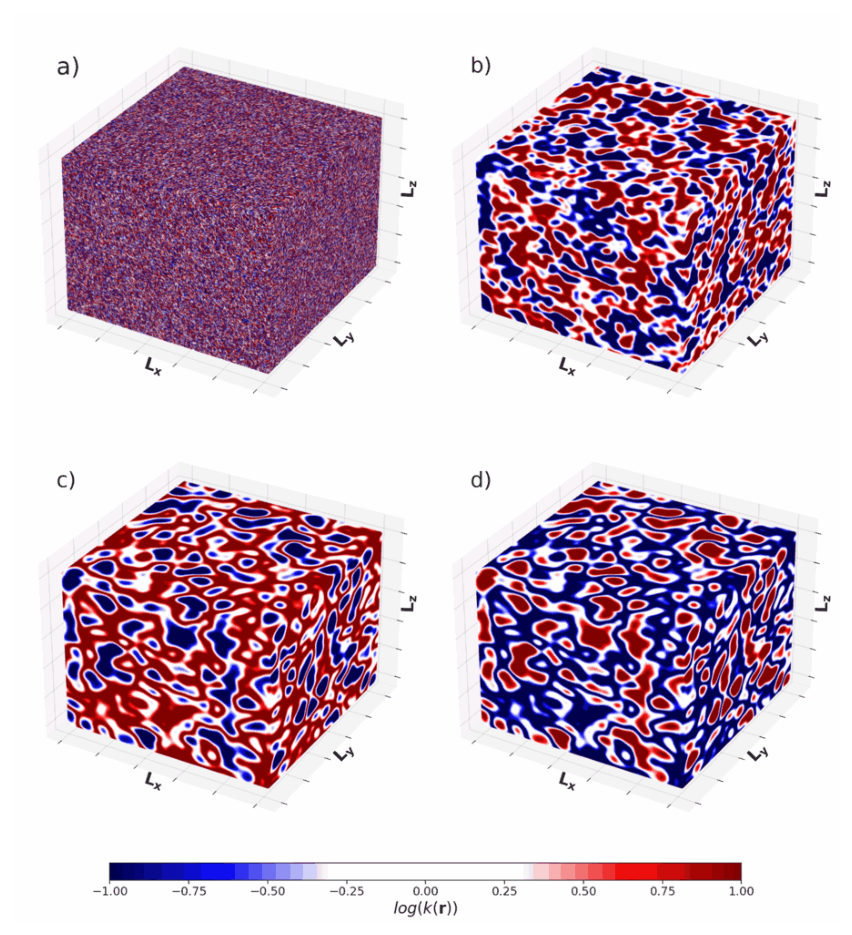
<figcaption class="paper-figure-caption"><b>Fig 3.</b> Figure 3: Hydraulic conductivity maps of Y = log[k(r)] showing the different connectivity structures of the 3D media samples of linear size L = 256∆. Here (a) NS, (b) ICS, (c) HCS, and (d) LCS. Maps are shown for fine log-variance σ2 Y = 2.</figcaption>
</figure>
<figure class="paper-figure-card">
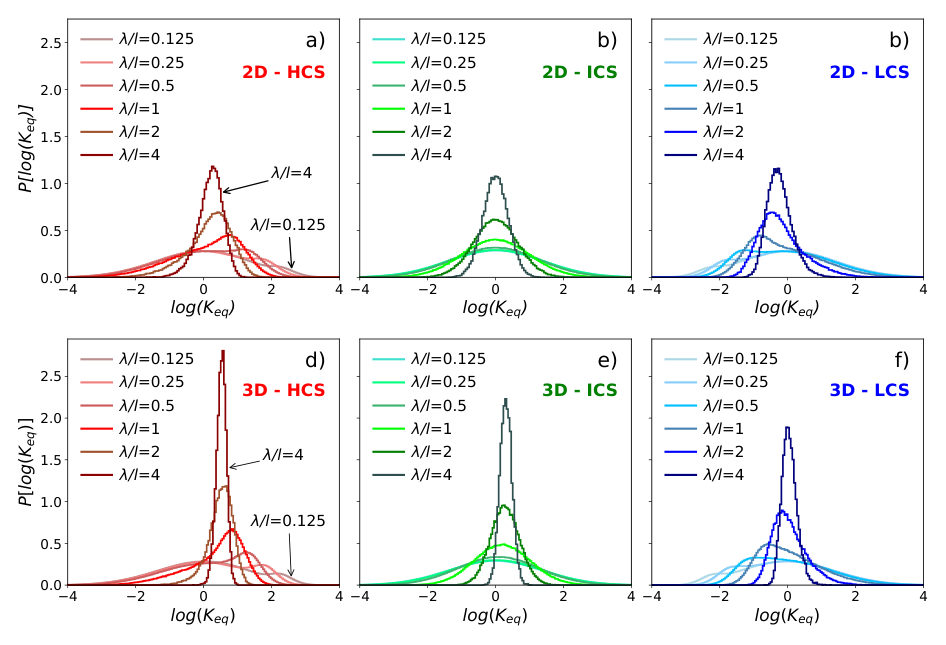
<figcaption class="paper-figure-caption"><b>Fig 4.</b> Figure 4: Probability density function P[log(Keq)] of (a–c) 2D, and (d–f) 3D media samples for (a, d) HCS, (b, e) ICS, and (c, f) LCS, with σ2 Y = 2 in all cases.</figcaption>
</figure>
<figure class="paper-figure-card">
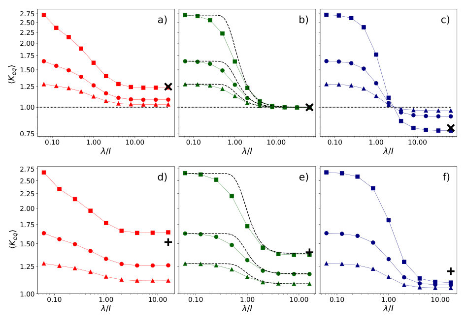
<figcaption class="paper-figure-caption"><b>Fig 5.</b> Figure 5: Normalized arithmetic mean ⟨Keq⟩as a function of λ/I for (a, d) HCS, (b, e) ICS, and (c, f) LCS. Top panels (a–c): 2D, bottom (d–f): 3D. Log-variances: σ2 Y = 0.5 (△), σ2 Y = 1 (⃝), and σ2 Y = 2 (□). Dashed lines ( ) in (b) and (e) show the analytical results of Eq. 4, with as = 1.3 for both 2D and 3D. The symbols (×) and (+), in (a–c) and in (d–f), respectively, show the numerical results from Zinn and Harvey (2003) (2D), and those from Jankovic et al. (2017) (3D), for σ2 Y = 2.</figcaption>
</figure>
</div>

<p><strong>Summary.</strong> This work analyzes how flow properties in heterogeneous media are determined by spatial dimensionality and connectivity. By comparing 2D and 3D models, the authors demonstrate that 2D approximations fail to capture the true physics of 3D flow, especially when connectivity constraints are factored in. The study uses stochastic methods to quantify these critical differences in effective conductivity.</p>
<p><strong>Why it may be interesting.</strong> While focused on fluid dynamics, the core methodology—analyzing how dimensionality and connectivity constrain macroscopic properties from microscopic disorder—shares conceptual parallels with understanding emergent behavior in complex, disordered quantum systems.</p>
<details>
<summary>Detailed structure</summary>
<p><strong>Main problem.</strong> The paper investigates why simplified 2D models fail to accurately predict macroscopic flow properties when applied to complex, heterogeneous 3D media.</p>
<p><strong>Main result.</strong> Significant differences exist between 2D and 3D flow properties, particularly when connectivity is considered, demonstrating that 2D models severely underestimate the complexity of 3D flow.</p>
<p><strong>Method.</strong> The authors use a stochastic approach, analyzing the upscaling of equivalent hydraulic conductivity ($K_{eq}$) across various connectivity structures (HCS, ICS, LCS) in both 2D and 3D realizations.</p>
<p><strong>Model / system.</strong> The system is flow through heterogeneous porous media, governed by Laplace's equation, where the local hydraulic conductivity $k(\mathbf{r})$ is modeled as a lognormal random field.</p>
<p><strong>Key observables.</strong> Equivalent hydraulic conductivity ($K_{eq}$), the full distribution $P[\log(K_{eq})]$, and its moments (mean, log-variance, log-skewness).</p>
<p><strong>Important parameters / regimes.</strong> Coarsening scale ($\lambda$) relative to the integral scale ($I$), and the spatial dimensionality ($D=2$ vs $D=3$).</p>
<p><strong>Assumptions / limitations.</strong> The analysis relies on characterizing the flow behavior across different connectivity regimes (HCS, ICS, LCS) and comparing the mathematical validity of 2D vs 3D upscaling formulas.</p>
<p><strong>Figures summary.</strong> Figures illustrate spatial maps of conductivity realizations and show quantitative comparisons of $K_{eq}$ and its distribution moments across different connectivity types and dimensions.</p>
<p><strong>Paper structure.</strong> The paper systematically compares the upscaling of $K_{eq}$ in 2D and 3D media, contrasting the behavior of different connectivity structures (HCS, ICS, LCS) and highlighting the mathematical and physical divergences between the two dimensions.</p>
</details>
<details>
<summary>Abstract</summary>
<p>We analyze how the equivalent hydraulic conductivity, $K_{eq}$, varies with the coarsening scale $λ/I$ in 2D and 3D heterogeneous media. Their local hydraulic conductivity, $k({\bf r})$, follows a lognormal distribution in all cases, while spatial connectivity of $k({\bf r})$ ranges from high (HCS), through intermediate or multi-Gaussian (ICS) and low (LCS), to unstructured (NS). Using a stochastic approach, we characterize the full distribution $P[\log(K_{eq})]$, and its moments: mean $\langle K_{eq}\rangle$, log-variance $σ_{\log(K_{eq})}^{2}$, and log-skewness $γ_{\log(K_{eq})}$, as a function of $λ/I$. Significant contrasts appear between 2D and 3D, which we interpret in terms of two key factors associated with spatial dimensionality. We observe that, compared with ICS, LCS and HCS exhibit two distinct features: existing analytical expressions for coarse-graining of $k({\bf r})$ in multi-Gaussian media do not apply, while $P[\log(K_{eq})]$ deviates from Gaussian at all scales $λ/I$. Critical path analysis is then used to quantify the connectivity of our samples, and show that $K_{eq}$ exhibits a power-law dependence on it. Our results reveal that connectivity can lead to substantial differences between 2D and 3D macroscopic flow properties, even for the same geostatistical parameters, highlighting the severe limitations of using 2D models to represent 3D flows.</p>
</details>
<p><sub><a href="#top">↑ back to top</a></sub></p>
<h2 id="other-papers-43">Other papers (43)</h2>
<p><em>Papers from primary archives without highlighted authors or any topic match. Click to expand.</em></p>
<details>
<summary>Show other papers</summary>

<p><a id="paper-2609.14372"></a></p>
<h3 id="a-classification-of-hirota-integrable-supersymmetric-bilinear-kdv-type-equations"><a href="http://arxiv.org/abs/2609.14372v1">A Classification of Hirota-Integrable Supersymmetric Bilinear KdV-Type Equations</a></h3>
<p><strong>Authors:</strong> Laurent Delisle, Amine Jaouadi<br>
<strong>Type:</strong> theory · <strong>Category:</strong> other · <strong>PDF:</strong> <a href="https://arxiv.org/pdf/2609.14372v1">https://arxiv.org/pdf/2609.14372v1</a><br>
<strong>Analysis basis:</strong> full PDF text, analyzed in chunks</p>
<div class="figure-strip-hint">↔ Scroll figures horizontally</div>
<div class="paper-figures-scroll">
<figure class="paper-figure-card">
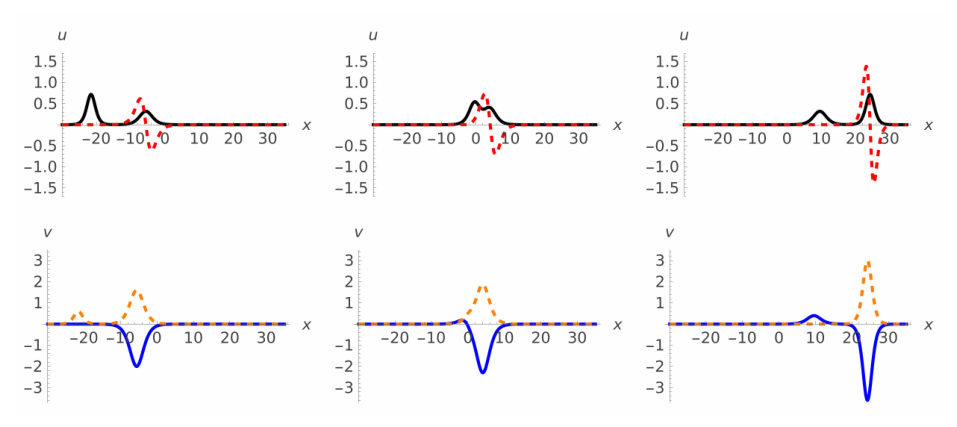
<figcaption class="paper-figure-caption"><b>Fig 1.</b> FIG. 1. The two-super-soliton solution for the SUSY KdV equation (1). The parameter choices</figcaption>
</figure>
</div>
<p><strong>Summary.</strong> This paper classifies supersymmetric bilinear KdV-type equations by deriving the necessary algebraic conditions for the existence of three-super-soliton solutions. By extending Hirota's classical criterion, the authors establish that integrability requires satisfying eight specific compatibility conditions. This work provides a unified mathematical framework for studying soliton dynamics in supersymmetric field theories.</p>
<p><strong>Why it may be interesting.</strong> While focused on classical integrable systems, the systematic extension of integrability criteria (like Hirota's method) into a supersymmetric framework provides powerful mathematical tools applicable to quantum field theories and quantum many-body systems exhibiting supersymmetry.</p>
<details>
<summary>Detailed structure</summary>
<p><strong>Main problem.</strong> The paper aims to classify supersymmetric bilinear Korteweg-de Vries (KdV)-type equations by determining the necessary and sufficient conditions for the existence of unconstrained three-super-soliton solutions.</p>
<p><strong>Main result.</strong> Three-super-soliton solutions exist only when eight specific integrability conditions are satisfied, providing a supersymmetric analogue to Hirota's classical integrability criterion.</p>
<p><strong>Method.</strong> The authors extend Hirota's classical three-soliton criterion to the supersymmetric setting, utilizing the super-Hirota bilinear method and analyzing the algebraic compatibility conditions derived from the soliton ansatz.</p>
<p><strong>Model / system.</strong> The primary model is the integrable N=1 supersymmetric extension of the KdV equation, formulated using superfields $\Phi$ on superspace $(x, t, 	heta)$. The analysis is conducted through the super-Hirota bilinear representation.</p>
<p><strong>Key observables.</strong> The existence and structure of one-, two-, and three-super-soliton solutions, and the resulting bosonic and fermionic compatibility conditions.</p>
<p><strong>Important parameters / regimes.</strong> The structure of the polynomial $P$ governing the dispersion relation, and the fermionic wave numbers ($\kappa_1, \kappa_2, \kappa_3$).</p>
<p><strong>Assumptions / limitations.</strong> The analysis assumes the $   au$-function representation and investigates the difference between 'Strong' and 'Weak' Hirota integrability.</p>
<p><strong>Figures summary.</strong> Figure 1 illustrates the two-super-soliton solution for the SUSY KdV equation, detailing both bosonic and fermionic components at different time slices.</p>
<p><strong>Paper structure.</strong> The paper first establishes the supersymmetric KdV equation and its super-Hirota bilinear form. It then analyzes the one- and two-soliton solutions, showing their general existence. The core of the work focuses on deriving the necessary eight compatibility conditions required for the three-super-soliton solution, leading to the classification.</p>
</details>
<details>
<summary>Abstract</summary>
<p>We present a classification of supersymmetric bilinear KdV-type equations admitting unconstrained three-super-soliton solutions. Extending Hirota's classical three-soliton criterion to the supersymmetric setting, we derive the complete bosonic and fermionic compatibility conditions governing the existence of three-super-soliton solutions. We prove that every supersymmetric bilinear KdV-type equation possesses unconstrained one- and two-super-soliton solutions, whereas three-super-soliton solutions exist only when eight integrability conditions are satisfied. These conditions provide a supersymmetric analogue of Hirota's classical integrability criterion and naturally recover the fermionic relations previously introduced by Carstea, revealing their structural origin. As a consequence, we classify the supersymmetric extensions of Hirota bilinear KdV-type equations and show that only a subset of Hietarinta's classical classification remains valid in the unrestricted supersymmetric framework.</p>
</details>
<p><sub><a href="#top">↑ back to top</a></sub></p>

<p><a id="paper-2609.15728"></a></p>
<h3 id="a-modular-topology-aware-software-stack-for-entanglement-based-distributed-quantum-computing"><a href="http://arxiv.org/abs/2609.15728v1">A Modular, Topology-Aware Software Stack for Entanglement-Based Distributed Quantum Computing</a></h3>
<p><strong>Authors:</strong> Luke Andreesen, Shobhit Gupta, Sean Sullivan, Manish Kumar Singh<br>
<strong>Type:</strong> theory · <strong>Category:</strong> quantum information and computing · <strong>PDF:</strong> <a href="https://arxiv.org/pdf/2609.15728v1">https://arxiv.org/pdf/2609.15728v1</a><br>
<strong>Analysis basis:</strong> full PDF text, analyzed in chunks</p>
<div class="figure-strip-hint">↔ Scroll figures horizontally</div>
<div class="paper-figures-scroll">
<figure class="paper-figure-card">
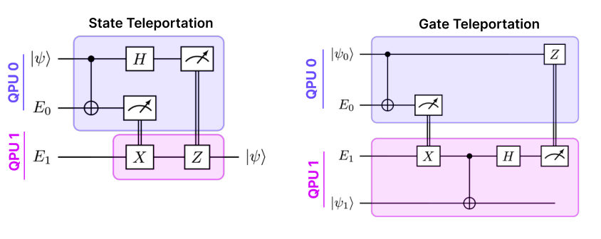
<figcaption class="paper-figure-caption"><b>Fig 1.</b> Fig. 1. State Teleportation (left) and Gate Teleportation (right) circuits. The state teleportation circuit transfers an arbitrary qubit state from one QPU to another QPU using an EPR pair. The gate teleportation circuit allows a two-qubit gate to be executed between two qubits sitting on distinct, interconnected processors.</figcaption>
</figure>
<figure class="paper-figure-card">
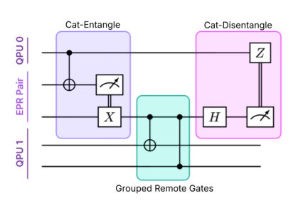
<figcaption class="paper-figure-caption"><b>Fig 2.</b> Fig. 2. Circuit-level implementation of the Cat-Entangler and Cat- Disentangler protocols. The Cat-Entangler consumes a single shared EPR pair to distribute the state of a control qubit onto a communication qubit on a remote QPU, allowing one or more gates controlled by that qubit to be executed remotely.</figcaption>
</figure>
<figure class="paper-figure-card">
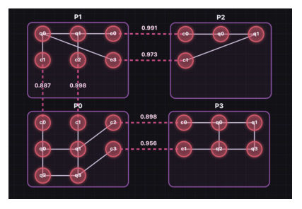
<figcaption class="paper-figure-caption"><b>Fig 3.</b> Fig. 4. A sample network configuration generated via Quantum Network Constructor. This illustrative system shows four QPUs, with varying inter- connect fidelities (dotted lines). Solid lines indicate intra-QPU connections. Circles with ‘q’ labels, e.g. ‘q0’, represent computation qubits, while circles with ‘c’ labels, e.g. ‘c0’, represent communication qubits.</figcaption>
</figure>
<figure class="paper-figure-card">
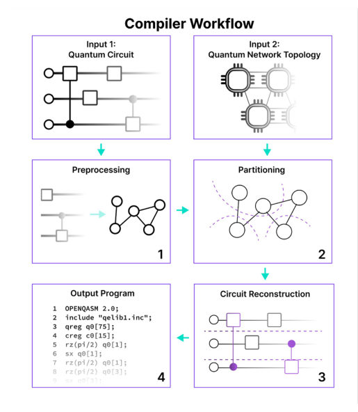
<figcaption class="paper-figure-caption"><b>Fig 4.</b> Fig. 3. Overview of the key steps in the compiler workflow. The compiler takes two inputs: (i) a quantum circuit to be executed and (ii) a quantum network topology describing the cluster of interconnected QPUs. In the pre- processing stage (1), the circuit is converted into a graph-based representation that captures both circuit dynamics and network topology. The resulting interaction graph is then partitioned (2) across the available QPUs, with cut edges (dashed) denoting interactions that span partition boundaries and therefore require inter-QPU communication. During circuit reconstruction (3), the partitioned assignment is mapped back onto circuit form, inserting the operations needed to...</figcaption>
</figure>
<figure class="paper-figure-card">
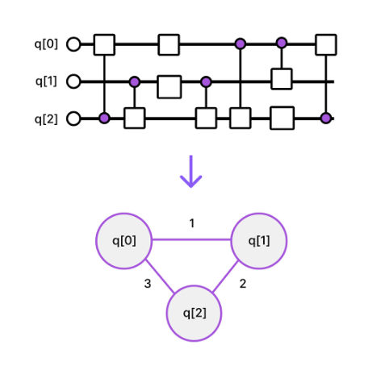
<figcaption class="paper-figure-caption"><b>Fig 5.</b> Fig. 5. Interaction graph representation of a quantum circuit. Each node represents a qubit, and edge weights represent the number of two-qubit interactions between each pair of qubits.</figcaption>
</figure>
</div>
<p><strong>Summary.</strong> This work presents a modular, topology-aware software stack designed to compile and schedule quantum circuits for distributed quantum computing across multiple interconnected QPUs. The framework explicitly accounts for the physical network topology, using teleportation primitives to manage cross-QPU operations. It is significant because it quantifies how network structure and compilation strategy critically impact the resource cost (entanglement) of running quantum algorithms.</p>
<p><strong>Why it may be interesting.</strong> While focused on computation, the explicit modeling of resource constraints (EPR pairs) and topology-dependent scheduling provides insights into resource management and connectivity limitations relevant to physical quantum hardware implementations.</p>
<details>
<summary>Detailed structure</summary>
<p><strong>Main problem.</strong> The paper addresses the challenge of scaling quantum computation beyond single monolithic processors by interconnecting multiple Quantum Processing Units (QPUs) using entanglement-based links.</p>
<p><strong>Main result.</strong> The authors demonstrate that the optimal compilation strategy for distributed quantum programs is highly dependent on the specific quantum circuit, the underlying network topology, and the intra-QPU connectivity.</p>
<p><strong>Method.</strong> They introduce an open-source, topology-aware framework that compiles and schedules quantum circuits by partitioning them across a specified network topology, utilizing state and gate teleportation for cross-QPU operations.</p>
<p><strong>Model / system.</strong> The system modeled is a distributed quantum computer composed of multiple interconnected QPUs linked by entanglement-based quantum channels. The framework handles the mapping of abstract quantum circuits onto this physical, constrained network structure.</p>
<p><strong>Key observables.</strong> EPR pairs consumed (entanglement cost), execution time, and the resulting time-resolved operation schedule.</p>
<p><strong>Important parameters / regimes.</strong> Network topology (e.g., ring, grid, all-to-all), intra-QPU connectivity, and the choice between deterministic or stochastic entanglement generation models.</p>
<p><strong>Assumptions / limitations.</strong> The framework targets the NISQ era and does not currently model quantum error correction, fidelity, or decoherence effects.</p>
<p><strong>Figures summary.</strong> Figures illustrate the teleportation protocols (State/Gate), the overall compiler workflow (Preprocessing $
ightarrow$ Partitioning $
ightarrow$ Scheduling), and the final output as a time-resolved Gantt chart schedule.</p>
<p><strong>Paper structure.</strong> The paper introduces the problem, details the modular framework (Compiler $
ightarrow$ QNC $
ightarrow$ Scheduler), provides examples of teleportation primitives, and concludes with performance comparisons across various benchmark circuits and topologies.</p>
</details>
<details>
<summary>Abstract</summary>
<p>Distributed quantum computing (DQC) seeks to scale beyond the limits of monolithic processors by interconnecting multiple quantum processing units (QPUs) through entanglement-based links. Realizing this vision requires the co-design of hardware and software across the domains of quantum networking, compilation, and scheduling, yet existing tools remain fragmented between monolithic circuit compilers and long-distance quantum network simulators. We present an open-source, topology-informed framework for the compilation and scheduling of distributed quantum programs. Given an input circuit and a description of the target network, the framework partitions and reconstructs the circuit into a distributed program that respects the specified inter- and intra-QPU topology, covers cross-QPU operations through gate and state teleportation, and schedules the result under either deterministic or stochastic entanglement-generation models. By accepting and emitting standard OpenQASM, the framework interoperates with existing monolithic toolchains, and its standardized module interfaces allow partitioning and scheduling strategies to be interchanged and benchmarked. Using this framework, we show that the best-performing compilation strategy varies across the tested circuits and network configurations, and that both network topology and intra-QPU connectivity substantially affect the entanglement cost of execution. These findings underscore the need for a co-design approach to distributed quantum computing, which our framework is designed to support.</p>
</details>
<p><sub><a href="#top">↑ back to top</a></sub></p>

<p><a id="paper-2609.15196"></a></p>
<h3 id="band-saddle-point-engineering-in-mixed-math1510math-site-math1511mathvmath1512mathsbmath1513math-kagome-metals"><a href="http://arxiv.org/abs/2609.15196v1">Band-Saddle-Point Engineering in Mixed $A$-site $A$V$_3$Sb$_5$ Kagome Metals</a></h3>
<p><strong>Authors:</strong> Maxim Wenzel, Alexander A. Tsirlin, Andrea N. Capa Salinas, Brenden R. Ortiz, Stephen D. Wilson, Ece Uykur, Martin Dressel<br>
<strong>Type:</strong> both · <strong>Category:</strong> strongly correlated electrons · <strong>PDF:</strong> <a href="https://arxiv.org/pdf/2609.15196v1">https://arxiv.org/pdf/2609.15196v1</a><br>
<strong>Analysis basis:</strong> full PDF text, analyzed in chunks</p>
<div class="figure-strip-hint">↔ Scroll figures horizontally</div>
<div class="paper-figures-scroll">
<figure class="paper-figure-card">
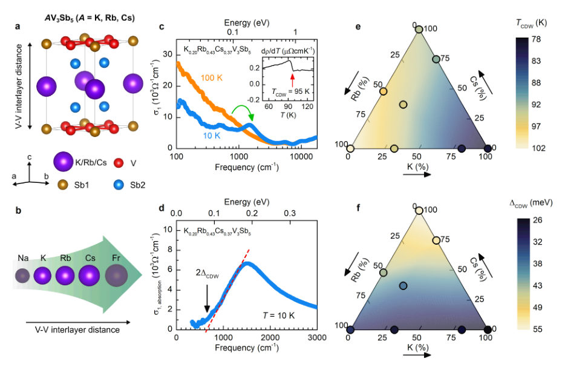
<figcaption class="paper-figure-caption"><b>Fig 1.</b> Fig. 1 | Evolution of the CDW state in mixed A-site AV3Sb5 systems. a Crystal structure of AV3Sb5 compounds highlighting the V kagome layers (red) separated by alkali ions (purple) and Sb2 atoms (blue), visualized by VESTA39. b Evolution of atomic radius of alkali ions and consequences for the V-V interlayer distance. c Experimental optical conductivity of K0.20Rb0.43Cs0.37V3Sb5 at 10 K (T &lt; TCDW), and above the CDW transition (100 K). The green arrow indicates the spectral weight transfer due to the gap opening. d Absorption edge after subtracting the low-energy contributions from the spectrum at 10 K. The extrapolated zero crossing (red-dashed line) corresponds to 2∆CDW. e Contour plot...</figcaption>
</figure>
<figure class="paper-figure-card">
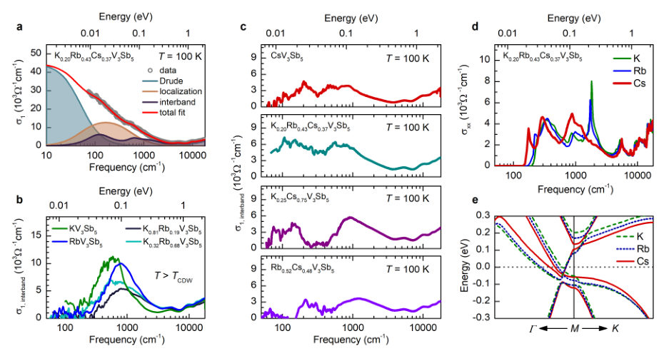
<figcaption class="paper-figure-caption"><b>Fig 2.</b> Fig. 2 | Evolution of interband transitions in the normal state. a Decomposed optical conductivity of K0.20Rb0.43Cs0.37V3Sb5 at 100 K modeled by a Drude + localization peak (intraband) and several Lorentzians describing the interband transitions. b Experimental interband optical conductivity of Cs-free compounds obtained by subtracting the intraband contributions from the data. All data are taken above the CDW transition. c Same as panel b for Cs-containing compounds. The data of the parent compounds are taken from our previous optical studies35–37. d Interband optical conductivity calculated by DFT using the lattice parameters of K0.20Rb0.43Cs0.37V3Sb5. Different alkali ions were used in...</figcaption>
</figure>
<figure class="paper-figure-card">
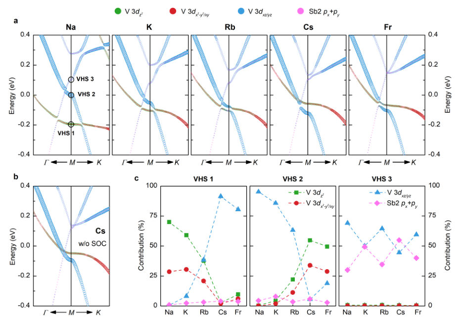
<figcaption class="paper-figure-caption"><b>Fig 3.</b> Fig. 3 | Evolution of the saddle-point electronic structure. a Low-energy band structures of AV3Sb5 compounds in the saddle-point region with colored dots representing contributions from different atomic orbitals. Experimental lattice parameters of K0.20Rb0.43Cs0.37V3Sb5 were used for all calculations, while the alkali ion was varied from Na to Fr (left to right). b Calculated band dispersion in the case of Cs in the absence of spin-orbit coupling. c Evolution of the orbital character at the saddle points as a function of the alkali-site element.</figcaption>
</figure>
<figure class="paper-figure-card">
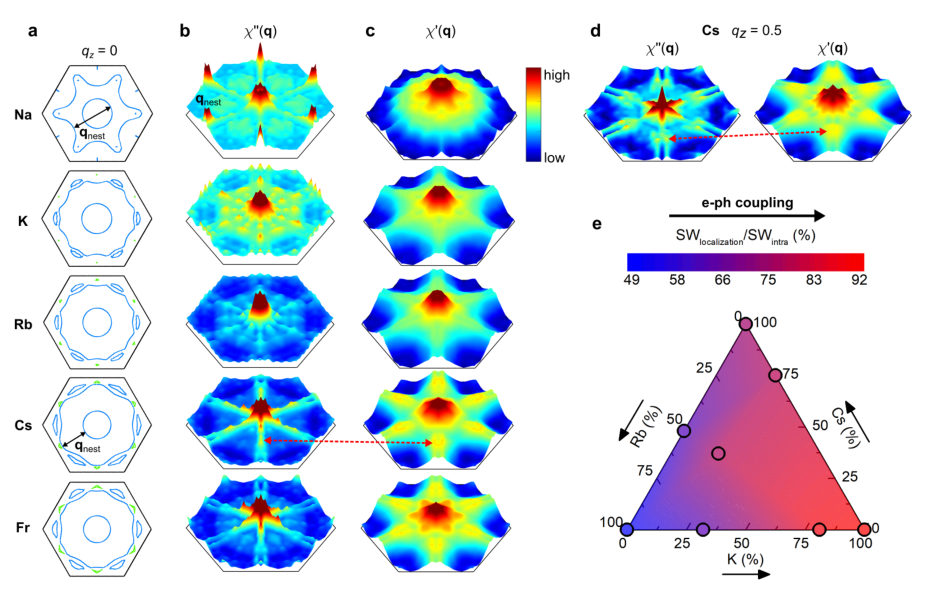
<figcaption class="paper-figure-caption"><b>Fig 4.</b> Fig. 4 | Fermi surface nesting and electron-phonon coupling. a Fermi surfaces for different alkali ions at qz = 0, illustrated using FermiSurfer42. Well-defined nesting vectors observed in the case of using Na and Cs for the calculations are marked by black arrows. b Imaginary part of the electronic susceptibility as a function of qx and qy, with qz = 0. c Corresponding real part of the electronic susceptibility. d Imaginary (left) and real (right) part of the susceptibility using Cs ions for the calculations at qz = 0.5. The red arrow connects the strongest peak in the imaginary part to the corresponding position in the real part, where a smeared-out hump is observed. e Ratio between the...</figcaption>
</figure>
</div>
<p><strong>Summary.</strong> This study uses optical spectroscopy and DFT calculations on $ ext{AV}_3   ext{Sb}_5$ Kagome metals to map how changing the alkali metal site controls the electronic band structure and CDW physics. The key finding is that the A-site substitution drives a band-saddle-point inversion, and electronic correlations are highly sensitive to the resulting interlayer spacing. This work advances the understanding of correlation-driven phenomena in layered quantum magnets.</p>
<p><strong>Why it may be interesting.</strong> The work provides a detailed case study of how chemical doping (A-site substitution) can tune fundamental electronic properties like orbital character and correlation strength in a highly correlated material, offering insights applicable to other layered quantum materials.</p>
<details>
<summary>Detailed structure</summary>
<p><strong>Main problem.</strong> The study investigates how varying the alkali metal composition (A-site substitution) in $    ext{AV}_3   ext{Sb}_5$ Kagome metals controls the low-energy electronic structure, particularly concerning the Charge-Density Wave (CDW) formation and orbital character.</p>
<p><strong>Main result.</strong> The alkali site controls the orbital character of Van Hove singularities and Fermi surface topology, evidenced by a band-saddle-point inversion unique to Cs-containing compounds. Furthermore, electronic correlations are found to be sensitive to the interlayer distance, which is modulated by the A-site ion.</p>
<p><strong>Method.</strong> The research combines optical spectroscopy measurements with extensive Density-Functional-Theory (DFT) calculations to analyze band structures, electronic susceptibilities, and optical conductivity.</p>
<p><strong>Model / system.</strong> The system is the quasi-two-dimensional $   ext{AV}_3   ext{Sb}_5$ Kagome metal, where A is an alkali metal ($  ext{K},     ext{Rb},    ext{Cs}$). The physics is governed by the interplay between alkali substitution, electronic correlations, and CDW ordering.</p>
<p><strong>Key observables.</strong> CDW gap ($2\Delta_{	ext{CDW}}$), interband optical conductivity features (especially around $200 	ext{ cm}^{-1}$), electronic correlation strength (via plasma frequency ratios), and the evolution of saddle-point electronic structure.</p>
<p><strong>Important parameters / regimes.</strong> Alkali metal identity ($    ext{K},     ext{Rb},    ext{Cs}$), temperature (especially near $T_{	ext{CDW}}$), and the lattice interlayer distance.</p>
<p><strong>Assumptions / limitations.</strong> The analysis relies on DFT calculations, which show discrepancies with experiment at low energies, necessitating assumptions like Fermi level renormalization to match observations.</p>
<p><strong>Figures summary.</strong> Figures track the evolution of the CDW state and gap energy with A-site composition, compare experimental and DFT interband optical conductivity, and map the evolution of saddle-point electronic structure and Fermi surfaces.</p>
<p><strong>Paper structure.</strong> The paper systematically analyzes the CDW state evolution, then delves into the electronic structure using DFT to pinpoint the role of the alkali ion via saddle-point inversion. It contrasts findings from different measurements (optical vs. susceptibility) to build a comprehensive picture of correlation effects.</p>
</details>
<details>
<summary>Abstract</summary>
<p>$A$V$_3$Sb$_5$ compounds ($A$ = K, Rb, Cs) offer an experimental platform for probing the physics of kagome metals near ideal Van Hove filling. Here, we use optical spectroscopy on $A$V$_3$Sb$_5$ with mixed $A$-site compositions to reveal the effect of the alkali metal on the low-energy electronic structure. Supported by density-functional-theory calculations, we identify a band-saddle-point inversion as a chemical consequence of Cs substitution, revealing that $A$-site composition controls the orbital character of Van Hove singularities, Fermi surface topology, and electron-phonon interactions while leaving the kagome layer intact.</p>
</details>
<p><sub><a href="#top">↑ back to top</a></sub></p>

<p><a id="paper-2609.13790"></a></p>
<h3 id="binary-optimization-with-complex-constraints-via-quantum-approximate-multi-objective-optimization"><a href="http://arxiv.org/abs/2609.13790v1">Binary Optimization with Complex Constraints via Quantum Approximate Multi-Objective Optimization</a></h3>
<p><strong>Authors:</strong> Andres Ruiz, Soumyadip Ghosh, Stefan Woerner<br>
<strong>Type:</strong> both · <strong>Category:</strong> quantum information and computing · <strong>PDF:</strong> <a href="https://arxiv.org/pdf/2609.13790v1">https://arxiv.org/pdf/2609.13790v1</a><br>
<strong>Analysis basis:</strong> full PDF text, analyzed in chunks</p>
<div class="figure-strip-hint">↔ Scroll figures horizontally</div>
<div class="paper-figures-scroll">
<figure class="paper-figure-card">
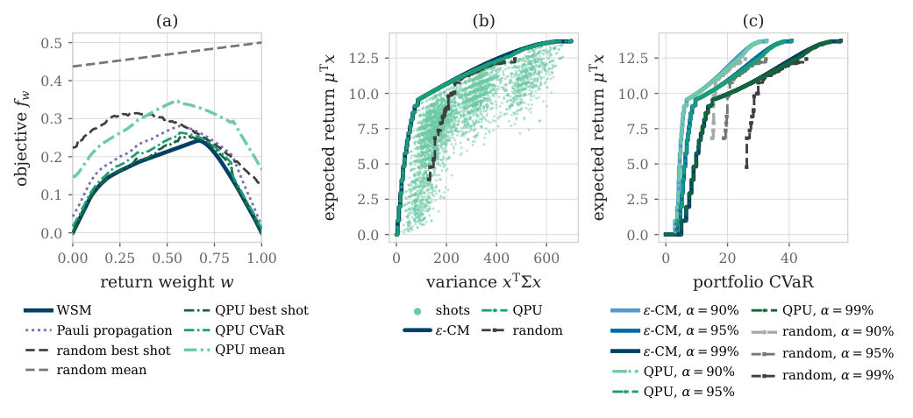
<figcaption class="paper-figure-caption"><b>Fig 1.</b> Figure 1. Results for the 100-asset portfolio instance. (a) Scalarized objective values for 100 equidistant weights w ∈[0, 1], showing the WSM reference, Pauli-propagation values, QPU mean, QPU-CVaR, QPU best shot, and random baselines. The QPU-CVaR curve averages the objective over the best 0.329% of the 100,000 shots. (b) Mean-variance values of all measured samples, together with the QPU, ϵ-CM, and random non-dominated fronts. (c) Mean-CVaR fronts of the ϵ-CM, QPU, and random solutions for confidence levels α = 90%, 95%, and 99%. All ϵ-CM curves and fronts are derived from the same 1,000 ϵ-CM solutions obtained by CPLEX; weighted-sum results are reported separately in Tab. I and Appendix...</figcaption>
</figure>
<figure class="paper-figure-card">
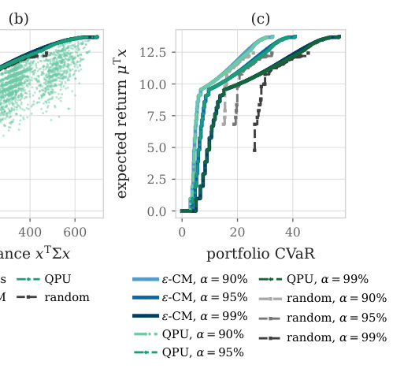
<figcaption class="paper-figure-caption"><b>Fig 2.</b> Fig. 1(a) shows that the measured expectation values follow the trend of the CPLEX and Pauli-propagation references, although hardware noise increases the ex- pected scalarized objective. We additionally compute the lower-tail CVaR of the sampled scalarized objective dis- tribution, setting its tail fraction to the estimated circuit fidelity of 0.329%. This shot tail fraction is unrelated to the portfolio-CVaR confidence levels α = 90%, 95%, 99% of Fig. 1(c), which refer to the portfolio’s loss distribution and not to shots. As shown by Barron et al. [20], under the corresponding noise-model assumptions, this CVaR estimated using noisy samples provides a provable lower bound on the...</figcaption>
</figure>
<figure class="paper-figure-card">
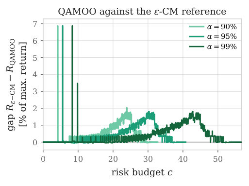
<figcaption class="paper-figure-caption"><b>Fig 3.</b> Figure 2. Expected-return gap between the QAMOO and ϵ-CM mean-CVaR fronts as a function of the CVaR bud- get c, for p = 3 and k = 4 on ibm boston. For each budget c, the return R(c) is the maximum expected return among portfolios satisfying CVaRα(L(x)) ≤c, evaluated in the Gaussian form CVaRα(L(x)) = −µTx + κα √</figcaption>
</figure>
<figure class="paper-figure-card">
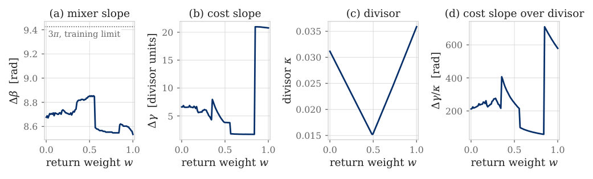
<figcaption class="paper-figure-caption"><b>Fig 4.</b> Figure 3. The trained ramp quantities at p = 3, k = 4, against the return weight w, over the 100 weights submitted to hardware. (a) the mixer slope ∆β; the dotted line marks 3π, the upper limit of the training range. (b) the cost slope ∆γ, in units of the divisor. (c) the divisor κLR, the largest absolute Ising coefficient of the problem at that weight; κLR depends on the problem and the weight only, not on the circuit depth. (d) the ratio ∆γ/κLR, in radians. Over the 100 weights, ∆β runs from 8.535 to 8.854 rad, a factor 1.04, with median 8.698 rad; ∆γ runs from 1.699 to 20.987 divisor units, a factor 12.35; κLR runs from 0.01523 to 0.03588, a factor 2.36, smallest at w = 0.495 and largest...</figcaption>
</figure>
<figure class="paper-figure-card">
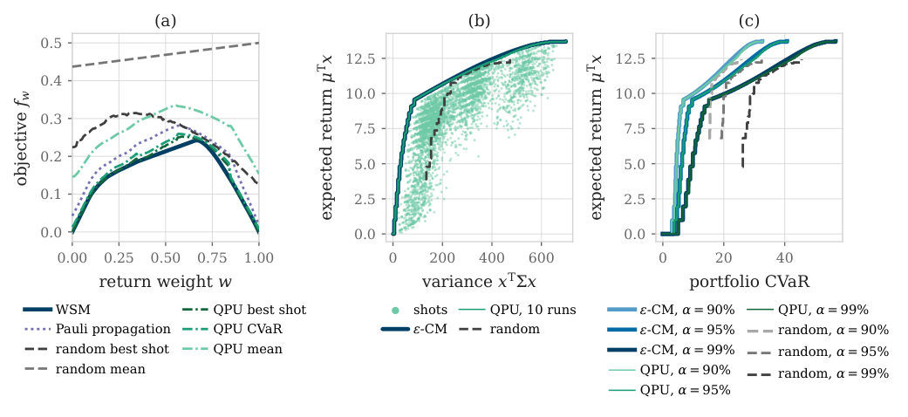
<figcaption class="paper-figure-caption"><b>Fig 5.</b> Figure 4. Robustness analysis at p = 3 and k = 4 on ibm boston. The 100 circuits used in Sec. V were executed ten times, with 100,000 shots per weight in each repetition. QPU curves show the median across repetitions; the ϵ-CM reference and random baseline are identical for all runs. The number of non-dominated portfolios ranged from 538 to 621 for the mean-variance front, and from 415 to 455, 429 to 478, and 443 to 494 for the mean-CVaR fronts at α = 90%, 95%, and 99%, respectively. The QPU-CVaR tail fraction was set to the estimated circuit fidelity of the corresponding hardware session, 0.162%, compared with 0.329% for the run reported in the main text. Overall, the repeated runs closely...</figcaption>
</figure>
</div>
<p><strong>Summary.</strong> This work reformulates complex, constrained binary optimization problems into Multi-Objective QUBOs solvable via quantum computation. By applying Quantum Approximate Multi-Objective Optimization (QAMOO) to portfolio selection, the authors successfully approximate the mean-variance and mean-CVaR Pareto fronts. The results show that the quantum approach yields near-optimal portfolios that closely match established classical benchmarks.</p>
<p><strong>Why it may be interesting.</strong> It demonstrates a concrete application of quantum optimization algorithms (QAMOO) to a highly relevant financial problem (portfolio optimization) involving complex, non-quadratic constraints, bridging quantum computation with quantitative finance.</p>
<details>
<summary>Detailed structure</summary>
<p><strong>Main problem.</strong> The paper addresses the challenge of optimizing binary problems with complex, non-quadratic constraints by reformulating them into Multi-Objective Quadratic Unconstrained Binary Optimization (MO-QUBO) problems.</p>
<p><strong>Main result.</strong> The proposed quantum approach, using QAMOO, successfully approximates the Pareto front for portfolio optimization (mean-variance and mean-CVaR) and yields near-optimal feasible portfolios when compared against classical benchmarks.</p>
<p><strong>Method.</strong> The methodology involves transforming constrained optimization into an MO-QUBO, solving for the Pareto set using QAMOO on a quantum computer, and then classically evaluating the original non-quadratic constraints on the resulting candidates.</p>
<p><strong>Model / system.</strong> The model is binary portfolio selection ($x \in \{0, 1\}^n$) aiming to optimize expected return ($\mu^T x$) subject to a Conditional Value-at-Risk (CVaR) constraint, which is non-quadratic.</p>
<p><strong>Key observables.</strong> Pareto front structure, Hypervolume (HV) indicator, Expected Return, CVaR values for $\alpha = 90\%, 95\%, 99\%$.</p>
<p><strong>Important parameters / regimes.</strong> Number of assets ($n$), risk aversion level ($\alpha$), and QAOA circuit parameters ($eta_l, \gamma_l$).</p>
<p><strong>Assumptions / limitations.</strong> The reduction relies on the objective and constraints being monotone with respect to the induced dominance order; global optimality is not guaranteed if only an approximation of the Pareto set is found.</p>
<p><strong>Figures summary.</strong> Figures compare the sampled Pareto fronts (mean-variance and mean-CVaR) from QAMOO against classical references ($\epsilon$-CM, WSM), showing close recovery of the front structure. Figure 2 specifically plots the expected-return gap between the two methods.</p>
<p><strong>Paper structure.</strong> The paper first introduces the theoretical framework for reformulating constrained optimization into MO-QUBOs. It then applies this to portfolio optimization, detailing the use of QAMOO on quantum hardware, followed by extensive comparison with classical methods and robustness checks.</p>
</details>
<details>
<summary>Abstract</summary>
<p>We show that a class of binary optimization problems with complex non-quadratic objectives or constraints can be reformulated as multi-objective quadratic unconstrained binary optimization problems. When the objective and constraints depend on a small number of quadratic features and are monotone with respect to their preferred directions, at least one globally optimal solution lies in the Pareto set of the associated MO-QUBO. This enables the constraints to be evaluated classically on Pareto-optimal candidates rather than encoded as penalties. We demonstrate the approach for binary portfolio optimization under a Conditional Value-at-Risk constraint. Using Quantum Approximate Multi-Objective Optimization on an illustrative 100-asset instance, we approximate the mean-variance Pareto front using an IBM Quantum computer and derive mean-CVaR fronts through classical post-processing. The hardware results recover the overall structure of the classical front and yield near-optimal feasible portfolios for different risk bounds.</p>
</details>
<p><sub><a href="#top">↑ back to top</a></sub></p>

<p><a id="paper-2609.13370"></a></p>
<h3 id="bootstrapping-currents-and-stress-tensors-in-3d-cfts"><a href="http://arxiv.org/abs/2609.13370v1">Bootstrapping currents and stress tensors in 3d CFTs</a></h3>
<p><strong>Authors:</strong> Vasiliy Dommes, Rajeev S. Erramilli, Colum Flynn, Alexandre Homrich, Petr Kravchuk, David Poland, David Simmons-Duffin, George Yuzhe Zhou<br>
<strong>Type:</strong> theory · <strong>Category:</strong> strongly correlated electrons · <strong>PDF:</strong> <a href="https://arxiv.org/pdf/2609.13370v1">https://arxiv.org/pdf/2609.13370v1</a><br>
<strong>Analysis basis:</strong> full PDF text, analyzed in chunks</p>
<div class="figure-strip-hint">↔ Scroll figures horizontally</div>
<div class="paper-figures-scroll">
<figure class="paper-figure-card">
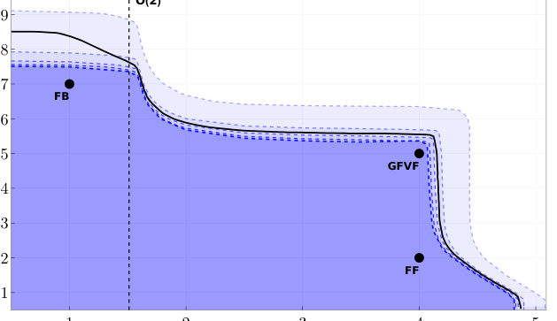
<figcaption class="paper-figure-caption"><b>Fig 1.</b> Figure 1: Bound on the allowed gaps for parity-even and parity-odd scalars in the JT system. The bounds at derivative orders Λ = 11, 19, 27, 35, 43 are shown. The solid black line shows the bound obtained using only the ⟨JJJJ⟩system at Λ = 23 in [17]. The known values for gaps in the free complex boson (FB), generalized free vector field (GFVF), and free fermion (FF) are shown. The vertical dotted line is at the O(2) model value, ∆+ S = 1.51136 from [14].</figcaption>
</figure>
<figure class="paper-figure-card">
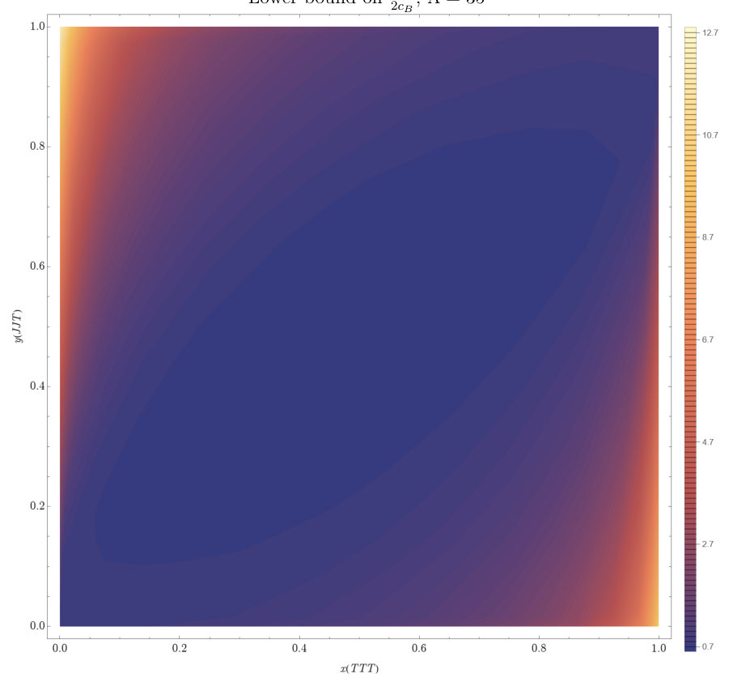
<figcaption class="paper-figure-caption"><b>Fig 2.</b> Figure 2: Contour plot of lower bound on cT 2cB at derivative order Λ = 35, as a function of the parameters x, y of the three-point functions ⟨TTT⟩and ⟨JJT⟩.</figcaption>
</figure>
<figure class="paper-figure-card">
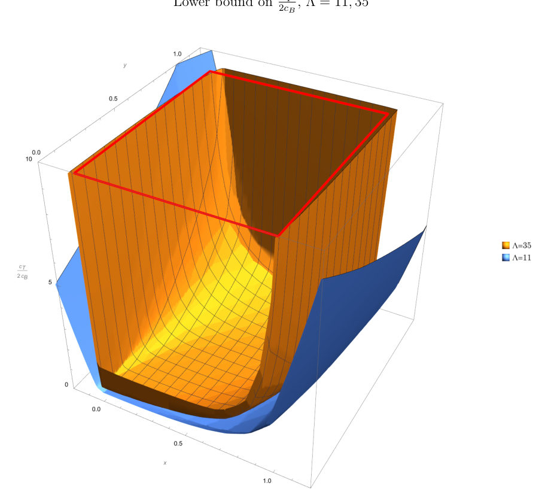
<figcaption class="paper-figure-caption"><b>Fig 3.</b> Figure 3: Lower bound on cT 2cB , including points slightly outside the conformal collider bounds. The red square shows the region defined by the conformal collider bounds (2.17). For clarity, the plot is deliberately cut off at the front face. Increasing Λ from 11 to 35 shows rapid growth of the lower bound outside of the region defined by the conformal collider bounds.</figcaption>
</figure>
<figure class="paper-figure-card">
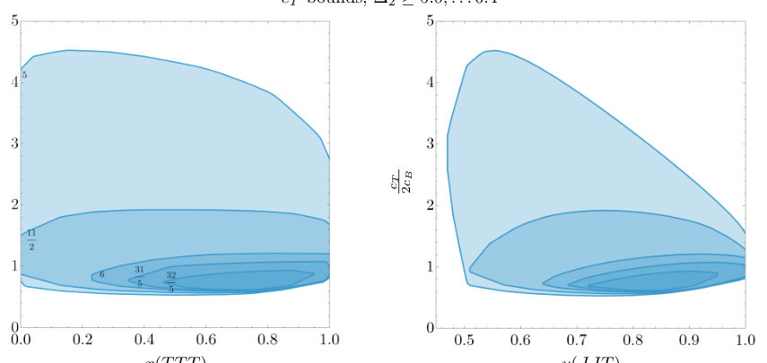
<figcaption class="paper-figure-caption"><b>Fig 4.</b> Figure 4: Closed allowed regions in the (x, y, cT ) volume for various values of gaps in the spin-2 parity-even channel. The shadow of the volumes on the (x, cT ) (left) and the (y, cT ) (right) planes are shown.</figcaption>
</figure>
<figure class="paper-figure-card">
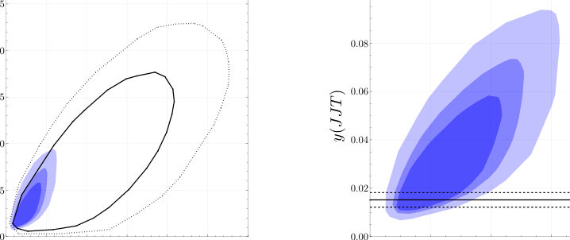
<figcaption class="paper-figure-caption"><b>Fig 5.</b> Figure 5: Allowed regions in the (x, y) plane, using the O(2) model assumptions in Table 2. Left: The dotted and solid black lines show the bound given by the weaker assumptions at Λ = 19, 27. The blue region represents the bound given by the stronger assumptions at Λ = 19, 27, 35. Right: zoom into the stronger-assumption island. Horizontal lines denotes the value and uncertainty of the O(2) prediction for γJJT from Ref. [20].</figcaption>
</figure>
</div>
<p><strong>Summary.</strong> This paper applies the conformal bootstrap program to constrain the correlation functions of currents and the stress tensor in 3D CFTs. By solving differential equations derived from symmetry and conservation laws, the authors derive universal bounds on key parameters like $c_T$. The results provide concrete determinations for specific models, such as the O(2) vector model.</p>
<p><strong>Why it may be interesting.</strong> While the primary focus is on CFT structure, the use of bootstrap methods to constrain universal parameters like central charges and correlation functions is a powerful theoretical tool applicable to strongly interacting quantum systems.</p>
<details>
<summary>Detailed structure</summary>
<p><strong>Main problem.</strong> The study performs a numerical conformal bootstrap analysis of the mixed correlation functions involving a spin-1 U(1) current (J) and the stress-energy tensor (T) in 3D Conformal Field Theories (CFTs).</p>
<p><strong>Main result.</strong> The analysis yields universal bounds on the stress-tensor two-point function coefficient ($c_T$) that reproduce conformal collider bounds, and determines specific values for the three-point functions $\langle JJT
angle$ and $\langle TTT
angle$ for the O(2) vector model.</p>
<p><strong>Method.</strong> The core method is the numerical conformal bootstrap, which involves interpreting conservation laws as partial differential equations (PDEs) to constrain coefficient functions, supplemented by imposing crossing symmetry constraints.</p>
<p><strong>Model / system.</strong> The focus is on parity-preserving 3D CFTs possessing a U(1) global symmetry. The analysis is highly general but applies specific results to the O(2) vector model.</p>
<p><strong>Key observables.</strong> Correlation functions $\langle O_1 O_2 O_3 O_4 
angle$ involving $J$ and $T$; the stress-tensor two-point function coefficient $c_T$; and the scaling dimensions of scalar operators.</p>
<p><strong>Important parameters / regimes.</strong> The parameters $\gamma_{JJT}$ and $\gamma_{TTT}$ characterizing the three-point functions; the central charges $c_T$ and $c_J$.</p>
<p><strong>Assumptions / limitations.</strong> The analysis assumes space parity invariance and relies on the equivalence between the full system and a charge conjugation-invariant system under mild assumptions.</p>
<p><strong>Figures summary.</strong> Figures illustrate the derived bounds on the stress-tensor two-point function ($c_T$) reproducing collider bounds, and show the allowed parameter space (islands) for the O(2) model in the $(x, y)$ plane.</p>
<p><strong>Paper structure.</strong> The paper systematically develops the constraints by first defining the mixed correlators, then using conservation equations (PDEs) to reduce the degrees of freedom, and finally applying crossing symmetry to determine the specific values for the O(2) model.</p>
</details>
<details>
<summary>Abstract</summary>
<p>We perform a numerical conformal bootstrap study of the mixed system of correlation functions involving a spin-1 $\mathrm{U}(1)$ current $J$ and the stress-energy tensor $T$ in parity-preserving 3d CFTs. We find universal bounds on the stress-tensor two-point function $c_T$, which numerically reproduce the conformal collider bounds on $\langle JJT\rangle$ and $\langle TTT\rangle$, as well as bounds on the leading parity-even and parity-odd scalar operator dimensions. Under mild assumptions, we determine the values of the $\langle JJT\rangle$ and $\langle TTT\rangle$ three-point functions in the $\mathrm{O}(2)$ vector model. The $\langle TTT\rangle$ result is new and $\langle JJT\rangle$ is consistent with a previous result in the literature.</p>
</details>
<p><sub><a href="#top">↑ back to top</a></sub></p>

<p><a id="paper-2609.15854"></a></p>
<h3 id="chiral-antiferromagnetism-from-momentum-space-resonance-in-a-2d-semiconductor"><a href="http://arxiv.org/abs/2609.15854v1">Chiral Antiferromagnetism from Momentum-Space Resonance in a 2D Semiconductor</a></h3>
<p><strong>Authors:</strong> R. Okuma, T. Ikenobe, Y. Fujisawa, K. Yamagami, H. C. H. Wu, T. Nakamura, Y. Ihara, H. Ishikawa, H. Suwa, H. Ishizuka, Y. Akagi, T. Kaneko, C. H. Hsu, Y. Obata, N. Tomoda, M. Dronova, K. Nagasawa, H. Saito, D. Ueta, H. Sagayama, J. Yamaura, M. Arita, K. Yogendra, S. Ideta, K. Kindo, T. Nakajima, S. J. Blundell, T. Kondo, K. Shimada, Y. Okamoto, Y. Okada<br>
<strong>Type:</strong> both · <strong>Category:</strong> strongly correlated electrons · <strong>PDF:</strong> <a href="https://arxiv.org/pdf/2609.15854v1">https://arxiv.org/pdf/2609.15854v1</a><br>
<strong>Analysis basis:</strong> full PDF text, analyzed in chunks</p>
<div class="figure-strip-hint">↔ Scroll figures horizontally</div>
<div class="paper-figures-scroll">
<figure class="paper-figure-card">
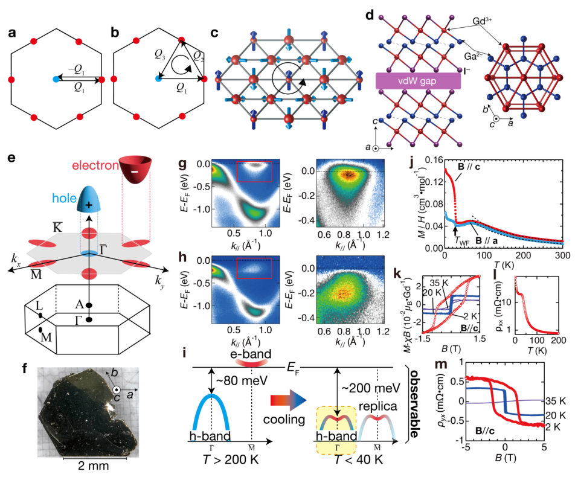
<figcaption class="paper-figure-caption"><b>Fig 1.</b> FIG. 1. Chiral triple-q semiconductor in GGI. a, Schematic electronic reconstruction</figcaption>
</figure>
<figure class="paper-figure-card">

<figcaption class="paper-figure-caption"><b>Fig 2.</b> FIG. 2. Triple-q magnetic and charge ordering in GGI. a,b Neutron diffraction on</figcaption>
</figure>
<figure class="paper-figure-card">

<figcaption class="paper-figure-caption"><b>Fig 3.</b> FIG. 3 Emergence of camel-back structure on the hole-band dispersion. a,bMomentum-</figcaption>
</figure>
<figure class="paper-figure-card">

<figcaption class="paper-figure-caption"><b>Fig 4.</b> FIG. 4 Microscopic origin of chiral resonance in GdGaI. a, Schematic illustration</figcaption>
</figure>
</div>
<p><strong>Summary.</strong> This work introduces a simple design principle for realizing chiral quantum matter by studying the semiconductor $ ext{GdGaI}$. The authors show that the material spontaneously forms a chiral triple-$q$ antiferromagnetic state, which forces a reconstruction of the electronic bands. This collective electronic and magnetic behavior generates Berry curvature, resulting in a measurable anomalous Hall effect despite the material being a semiconductor.</p>
<p><strong>Why it may be interesting.</strong> The concept of 'chiral resonance' provides a highly general and simple design principle for inducing topological transport (Berry curvature) using simple semiconductor band structures, which is relevant for designing novel quantum materials.</p>
<details>
<summary>Detailed structure</summary>
<p><strong>Main problem.</strong> The paper addresses the fundamental challenge of understanding how chiral quantum phases emerge, particularly when the microscopic origin is obscured by complex electronic structures.</p>
<p><strong>Main result.</strong> The authors demonstrate that a simple 2D semiconductor ($  ext{GdGaI}$) can spontaneously develop a chiral triple-$q$ antiferromagnetic state, leading to a pronounced anomalous Hall effect via momentum-space Berry curvature.</p>
<p><strong>Method.</strong> The study combines theoretical calculations (DFT, Kondo-lattice model) with extensive experimental measurements, including ARPES, neutron diffraction, and transport measurements.</p>
<p><strong>Model / system.</strong> The system is the layered van der Waals semiconductor $ ext{GdGaI}$. The theoretical framework involves modeling the interplay between itinerant band-edge carriers and localized magnetic moments via a Kondo-lattice model.</p>
<p><strong>Key observables.</strong> Spontaneous anomalous Hall effect ($
ho_{yx}$), triple-$q$ magnetic ordering vectors, and the characteristic 'camelback' reconstruction of the electron-hole band edges.</p>
<p><strong>Important parameters / regimes.</strong> The transition temperature ($T_{	ext{WF}} \approx 28 	ext{ K}$), the lattice constant ($a$), and the coupling strength ($J$) are crucial parameters.</p>
<p><strong>Assumptions / limitations.</strong> The core assumption is that the cooperative reconstruction of band edges, driven by the magnetic order, provides a simple, resonant mechanism for generating topological properties.</p>
<p><strong>Figures summary.</strong> Figures illustrate ARPES showing band reconstruction, neutron diffraction confirming the triple-$q$ magnetic structure, and transport measurements demonstrating the anomalous Hall response below the magnetic ordering temperature.</p>
<p><strong>Paper structure.</strong> The paper progresses by first identifying the limitations of complex metal models, then applying the concept to the simple semiconductor $ ext{GdGaI}$. It details the experimental confirmation of the triple-$q$ magnetic order, links this order to the electronic band reconstruction, and finally uses the resulting momentum-space topology to explain the anomalous Hall effect.</p>
</details>
<details>
<summary>Abstract</summary>
<p>Understanding the principles governing the emergence of chiral quantum phases is a fundamental challenge, not only for uncovering new mechanisms of quantum-state formation but also for realizing giant electronic responses and transport phenomena arising from chirality and topology. While Fermi-surface instabilities in metals can stabilize complex ordered states through multiple competing scattering channels, their microscopic origin is often obscured by the complexity of the underlying electronic structure, limiting the development of general microscopic design principles. Here, we introduce a complementary strategy based on the simplicity of semiconductor band extrema. Using the layered van der Waals semiconductor GdGaI, whose low-energy electronic structure consists of simple electron and hole valleys, we discover the spontaneous emergence of an intertwined chiral triple-$q$ antiferromagnetic state accompanied by a cooperative reconstruction of the electron-hole band edges, beyond the conventional expectation of a single-$q$ ground state. This collective reconstruction generates substantial momentum-space Berry curvature, giving rise to a pronounced spontaneous anomalous Hall effect despite the semiconducting character and negligible net magnetization. Remarkably, this chiral state is realized within an atomically well-defined ($\approx2a$), topologically nontrivial magnetic texture, showing that such collective quantum states can emerge at an exceptionally small length scale from a simple two-dimensional magnetic semiconductor. More broadly, our results introduce a remarkably simple design concept for chiral quantum matter: using simple semiconductor band extrema as building blocks for resonance-like interplay in momentum space, providing a route to Berry curvature, topological transport, and emergent quantum phases.</p>
</details>
<p><sub><a href="#top">↑ back to top</a></sub></p>

<p><a id="paper-2609.14019"></a></p>
<h3 id="conditional-quantum-flow-matching-for-data-scarce-physiological-signal-augmentation"><a href="http://arxiv.org/abs/2609.14019v1">Conditional Quantum Flow Matching for Data-Scarce Physiological Signal Augmentation</a></h3>
<p><strong>Authors:</strong> Chi-Sheng Chen, Samuel Yen-Chi Chen<br>
<strong>Type:</strong> theory · <strong>Category:</strong> disordered systems and neural networks · <strong>PDF:</strong> <a href="https://arxiv.org/pdf/2609.14019v1">https://arxiv.org/pdf/2609.14019v1</a><br>
<strong>Analysis basis:</strong> full PDF text, analyzed in chunks</p>
<div class="figure-strip-hint">↔ Scroll figures horizontally</div>
<div class="paper-figures-scroll">
<figure class="paper-figure-card">

<figcaption class="paper-figure-caption"><b>Fig 1.</b> Fig. 1. CQFM. (a) Encoding: CSP components, the K most class-discriminative rFFT bins each, magnitudes forming a nonnegative 64-dim vector. (b) One flow step on six system qubits and an ancilla: L layers of Ry and ring-CRy (ring</figcaption>
</figure>
<figure class="paper-figure-card">

<figcaption class="paper-figure-caption"><b>Fig 2.</b> Fig. 2. (a) C2ST vs. label budget (mean ± 95% CI over 9 subjects × 5 seeds). Informative-prior transport approaches the data distribution as labels increase, while noise-initialized transport stays almost perfectly distinguishable; the prior alone (dashed) overlaps CQFM. (b) Fidelity does not change with circuit depth (N=25, 9 subjects × 3 seeds).</figcaption>
</figure>
<figure class="paper-figure-card">

<figcaption class="paper-figure-caption"><b>Fig 3.</b> Fig. 3. What the models generate (N=25, subject S9—the median subject by CQFM accuracy—seed 0). Top: class-mean spectra, where four separated curves mean class structure is reproduced. Bottom: 15 generated samples of class 1 (colour) over 15 real ones (grey). Every informative-prior model reproduces the CSP envelope and its class structure; noise-initialized QuDDPM produces flat spectra.</figcaption>
</figure>
<figure class="paper-figure-card">

<figcaption class="paper-figure-caption"><b>Fig 4.</b> Fig. 4. (a) Prior-quality sensitivity (N=25): as class in- formation leaves the prior, the prior alone drops to chance TSTR while CQFM recovers it through its conditioning. (b) Tuned classical FM at α=1 (best of four settings per bud- get). CQFM’s 306 parameters fall between the 198- and 332- parameter models (shaded) and beat both; classical catches up at about twice the size.</figcaption>
</figure>
</div>
<p><strong>Summary.</strong> This paper introduces Conditional Quantum Flow Matching (CQFM), a novel quantum generative model designed to augment data-scarce physiological signals like EEG by incorporating class structure. CQFM conditions its quantum flow on both time and class label, allowing it to utilize an informative prior rather than starting from pure noise. The model demonstrates state-of-the-art performance in signal augmentation tasks.</p>
<p><strong>Why it may be interesting.</strong> It applies quantum machine learning techniques (quantum circuits for generative modeling) to complex, structured data like physiological signals, bridging quantum computation with advanced ML for signal processing.</p>
<details>
<summary>Detailed structure</summary>
<p><strong>Main problem.</strong> Generative augmentation is needed for label scarcity in physiological signal classification, but existing quantum generative models ignore available class structure by starting from uninformative noise.</p>
<p><strong>Main result.</strong> The proposed Conditional Quantum Flow Matching (CQFM) significantly outperforms baselines, achieving a +5.1 accuracy point gain over QuDDPM on BCI Competition IV-2a.</p>
<p><strong>Method.</strong> CQFM is a novel quantum generative model that conditions the flow matching process on both the flow time and the class label, enabling the transport of an informative class-conditional prior.</p>
<p><strong>Model / system.</strong> The model is applied to physiological signals, specifically EEG, using a 306-parameter parameterized quantum circuit. The input data is first processed via a spectral embedding to create a nonnegative feature vector.</p>
<p><strong>Key observables.</strong> Augmented downstream MLP accuracy, C2ST (real-vs-generated discriminability), LSD (class-mean log-spectral distance), and TSTR (Test statistic for class structure reproduction).</p>
<p><strong>Important parameters / regimes.</strong> The model is conditioned on flow time ($t$) and class label ($c$); the circuit has 306 parameters.</p>
<p><strong>Assumptions / limitations.</strong> The encoding is limited to feature-space augmentation, and the quantum advantage is questioned as the model is classically simulable.</p>
<p><strong>Figures summary.</strong> Figures illustrate the encoding process, the flow step comparison between CQFM and QuDDPM, and performance comparisons showing CQFM's superiority when using informative priors.</p>
<p><strong>Paper structure.</strong> The paper introduces the problem, details the CQFM mechanism using conditional parameterization, presents ablation studies showing the necessity of the informative prior, and validates performance on the BCI dataset.</p>
</details>
<details>
<summary>Abstract</summary>
<p>Generative augmentation is a standard remedy for label scarcity in physiological signal classification, but existing quantum generative models start from uninformative noise, ignoring class structure that is already available. We propose Conditional Quantum Flow Matching (CQFM): a single 306-parameter circuit, conditioned on both flow time and class label, transports a compact class-conditional prior toward the target distribution. Quantum flow matching as published is unconditional, so this is to our knowledge the first conditional one, and the first EEG augmentation on a parameterized quantum circuit. A nonnegative spectral embedding removes the need for tomography at readout. On BCI Competition IV-2a, starting from a prior rather than noise is worth $+5.1$ accuracy points over QuDDPM (9/9 subjects), though at that operating point a class-conditional Gaussian matches CQFM. Where the prior fails the transport earns its keep: given one transferred from other subjects it regains $+7.2$ TSTR points (9/9).</p>
</details>
<p><sub><a href="#top">↑ back to top</a></sub></p>

<p><a id="paper-2609.13388"></a></p>
<h3 id="cuda-q-logical-retargetable-compilation-for-fault-tolerant-quantum-computing"><a href="http://arxiv.org/abs/2609.13388v1">CUDA-Q Logical: Retargetable Compilation for Fault-Tolerant Quantum Computing</a></h3>
<p><strong>Authors:</strong> Alexander McCaskey, Justin Lietz, Adam Holmes, Kohei Nakaji, Vadym Kliuchnikov, Yifan Hong, Amalee Wilson, Andres Paz, Bettina Heim, Bruno Schmitt, Krysta M. Svore<br>
<strong>Type:</strong> theory · <strong>Category:</strong> quantum information and computing · <strong>PDF:</strong> <a href="https://arxiv.org/pdf/2609.13388v1">https://arxiv.org/pdf/2609.13388v1</a><br>
<strong>Analysis basis:</strong> full PDF text, analyzed in chunks</p>
<div class="figure-strip-hint">↔ Scroll figures horizontally</div>
<div class="paper-figures-scroll">
<figure class="paper-figure-card">

<figcaption class="paper-figure-caption"><b>Fig 1.</b> Fig. 1. CUDA-Q Logical progressively refines one logical program from target-independent intent to real-time control. Each profile adds a new class of target commitment, while research components attach at typed boundaries and analyses observe the same evolving build. Compilation may stop at any verified profile accepted by the selected target.</figcaption>
</figure>
<figure class="paper-figure-card">

<figcaption class="paper-figure-caption"><b>Fig 2.</b> Fig. 2. The logical virtual machine for CUDA-Q. Regions expose code-independent logical capacity and capabilities, streams ex- pose resource-state supply, and channels constrain admissible flow. Encodings and physical routes are deliberately absent.</figcaption>
</figure>
<figure class="paper-figure-card">

<figcaption class="paper-figure-caption"><b>Fig 3.</b> Fig. 4. P3 schedule-derived RSA-2048 tradeoffs across AutoCCZ lane counts and carry-runway separations. From left to right: single-run wall-clock time and physical-qubit footprint. Each point is obtained by compiling and scheduling the corresponding architecture configuration at P3.</figcaption>
</figure>
<figure class="paper-figure-card">

<figcaption class="paper-figure-caption"><b>Fig 4.</b> Fig. 6. Layered device construction in CUDA-Q Logical. (a) The immutable Device composes a contiguous prefix of P1–P4 virtual machines and explicit adjacent-stage bindings. P0 workloads, P2 architecture bundles, the mutable builder, and targets remain separate inputs. (b) Authoring adds P1 logical facts, P2 QEC binding, and P3 physical materialization before validation freezes the device. Only then does compilation combine the unchanged P0 workload, device, and target into a witnessed build.</figcaption>
</figure>
<figure class="paper-figure-card">

<figcaption class="paper-figure-caption"><b>Fig 5.</b> Fig. 7. The connected P2 object model in CUDA-Q Logical. (a) A code supplies verified algebra, a code presentation supplies a syndrome-boundary interpretation, and an encoding exposes the reusable typed interface. A device’s QECRegion provides capacity for that encoding; compilation allocates linear patch values from the pool. (b) A gadget specification relates an ideal logical action to an executable realization. Typed patch endpoints and stable record families expose its boundary, a detached detector contract supplies the syndrome and detector interpretation used by analysis, and a protocol composes invocations and owns control policy.</figcaption>
</figure>
</div>
<p><strong>Summary.</strong> This paper presents CUDA-Q Logical, a novel, extensible compiler infrastructure designed to manage the complexity of fault-tolerant quantum computing. It unifies the process of compilation and resource analysis by progressively lowering logical programs through distinct, verifiable abstraction layers. This approach allows for principled, cross-architecture comparison and exposes cost drivers previously hidden by manual analysis.</p>
<p><strong>Why it may be interesting.</strong> While focused on compilation, the rigorous handling of resource constraints, state provenance, and the explicit modeling of physical resource requirements (like timing and connectivity) are highly relevant for designing and simulating complex quantum hardware architectures.</p>
<details>
<summary>Detailed structure</summary>
<p><strong>Main problem.</strong> Existing tools for fault-tolerant quantum computing lack a unified framework, forcing manual composition that loses provenance and makes resource cost attribution difficult.</p>
<p><strong>Main result.</strong> The authors introduce CUDA-Q Logical, an extensible compiler infrastructure that unifies compilation and resource analysis by tracking provenance across all abstraction levels.</p>
<p><strong>Method.</strong> The framework uses progressive lowering through a constrained logical virtual machine, moving from high-level logical intent (P0) down to physical control plans (P4).</p>
<p><strong>Model / system.</strong> The system models fault-tolerant quantum computation, requiring mapping logical programs onto heterogeneous Quantum Error Correction (QEC) codes and diverse execution models.</p>
<p><strong>Key observables.</strong> Resource estimates (qubits, time, failure budget), provenance records, and semantic preservation across compilation stages.</p>
<p><strong>Important parameters / regimes.</strong> QEC parameters (e.g., code size, distance), timing parameters (latency, initiation interval), and error probabilities.</p>
<p><strong>Assumptions / limitations.</strong> The framework assumes that components entering the compiler are verified and typed data, and it distinguishes between local simulation and real-time hardware constraints.</p>
<p><strong>Figures summary.</strong> Figure 1 illustrates the progressive refinement path from logical intent (P0) through the four main profiles (P0-P4), showing the verifiable refinement pipeline.</p>
<p><strong>Paper structure.</strong> The paper details the progressive lowering pipeline (P0 to P4), describes the modular physical materialization models (FactoryModel, SpacetimePlanModel, TransportModel), and demonstrates how resource estimates are derived at each stage.</p>
</details>
<details>
<summary>Abstract</summary>
<p>Realizing fault-tolerant quantum computing requires mapping logical programs to heterogeneous quantum error correction (QEC) codes and diverse fault-tolerant execution models, scheduling physical resources, and coupling to real-time classical control and feedback. Specialized tools exist for each step but rely on manual composition and translation that discard assumptions and provenance, separating resource estimates from the compiler artifacts they describe, and making it difficult to validate correctness, compare architectures, or attribute costs to specific design choices. We present CUDA-Q Logical, an extensible compiler infrastructure for retargetable fault-tolerant compilation, analysis, and execution. Interoperable with CUDA-Q and other mainstream front-ends, CUDA-Q Logical progressively lowers target-independent logical programs through a constrained logical virtual machine, QEC microcode, physical gate schedules, and real-time control plans, with each layer preserving semantics and provenance, while verifying composition and resource constraints. By deriving every resource estimate directly from compiler artifacts, the framework unifies compilation and resource analysis, enabling successively refined estimates and principled cross-architecture comparison while permitting QEC codes, execution models, decoders, and hardware architectures to be introduced as modular extensions. Across workloads ranging from application-architecture studies to qLDPC surgery and detector-error-model composition, we show that schedule-derived estimates reconcile with established independent models. Crucially, this compiler-visible structure exposes cost drivers hidden by aggregate analytical formulas, carries QEC artifacts intact into simulation, and demonstrates a complete compilation pipeline for fault-tolerant quantum computing.</p>
</details>
<p><sub><a href="#top">↑ back to top</a></sub></p>

<p><a id="paper-2609.14626"></a></p>
<h3 id="derivatives-of-quantum-randomness-separating-pseudorandom-unitaries-from-pseudorandom-function-like-states"><a href="http://arxiv.org/abs/2609.14626v1">Derivatives of Quantum Randomness: Separating Pseudorandom Unitaries from Pseudorandom (Function-like) States</a></h3>
<p><strong>Authors:</strong> Minki Hhan<br>
<strong>Type:</strong> theory · <strong>Category:</strong> quantum information and computing · <strong>PDF:</strong> <a href="https://arxiv.org/pdf/2609.14626v1">https://arxiv.org/pdf/2609.14626v1</a><br>
<strong>Analysis basis:</strong> full PDF text, analyzed in chunks</p>
<div class="figure-strip-hint">↔ Scroll figures horizontally</div>
<div class="paper-figures-scroll">
<figure class="paper-figure-card">

<figcaption class="paper-figure-caption"><b>Fig 1.</b> Low-resolution page preview, page 2</figcaption>
</figure>
<figure class="paper-figure-card">

<figcaption class="paper-figure-caption"><b>Fig 2.</b> Low-resolution page preview, page 3</figcaption>
</figure>
<figure class="paper-figure-card">

<figcaption class="paper-figure-caption"><b>Fig 3.</b> Low-resolution page preview, page 4</figcaption>
</figure>
<figure class="paper-figure-card">

<figcaption class="paper-figure-caption"><b>Fig 4.</b> Low-resolution page preview, page 5</figcaption>
</figure>
<figure class="paper-figure-card">

<figcaption class="paper-figure-caption"><b>Fig 5.</b> Low-resolution page preview, page 6</figcaption>
</figure>
</div>
<p><strong>Summary.</strong> This paper proves a fundamental separation between pseudorandomness for quantum states and pseudorandomness for quantum unitaries. By analyzing the derivatives of the unitary construction map, the authors show that the low-rank structure inherent in state-based constructions cannot reproduce the behavior of truly random unitaries. This establishes a key theoretical boundary in quantum information theory.</p>
<p><strong>Why it may be interesting.</strong> The differential perspective applied to quantum operations provides a powerful new tool for characterizing the structural differences between various forms of quantum randomness, which is highly relevant for understanding the limits of quantum simulation and cryptography.</p>
<details>
<summary>Detailed structure</summary>
<p><strong>Main problem.</strong> The paper aims to determine if the pseudorandomness notions for quantum states (PRFSGs) and quantum unitaries (PRUs) are equivalent, specifically by proving a separation between them.</p>
<p><strong>Main result.</strong> A full unitary oracle separation is proven, showing that adaptively secure PRFSGs do not imply non-adaptively secure PRUs, revealing a fundamental distinction between pseudorandomness for states versus unitaries.</p>
<p><strong>Method.</strong> The core technique involves analyzing the derivatives of the map that constructs a candidate PRU from state generation oracles, exploiting the resulting low-rank structure to distinguish it from truly random unitaries.</p>
<p><strong>Model / system.</strong> The study concerns quantum computation primitives, including Pseudorandom State Generators (PRSGs), PRFSGs, and PRUs. The analysis uses quantum channels and oracle access within a quantum information framework.</p>
<p><strong>Key observables.</strong> The low rank of the gradient of the map from oracles to unitaries, and the acceptance probability of quantum tests (like the quantum OR test) used to distinguish candidate unitaries from Haar-random ones.</p>
<p><strong>Important parameters / regimes.</strong> The key size parameter ($\lambda$), the number of queries ($q$), and the threshold for query lengths ($ au$).</p>
<p><strong>Assumptions / limitations.</strong> The separation is shown for the strongest PRFSG notion and the weakest PRU notion, and the analysis handles non-unitary implementations by examining the derivative of the extended state.</p>
<p><strong>Paper structure.</strong> The paper develops the separation by first establishing a low-rank derivative bound on the output state when using state oracles, and then constructing a distinguisher based on this derivative structure to show that candidate PRUs fail to mimic truly random unitaries.</p>
</details>
<details>
<summary>Abstract</summary>
<p>Quantum computation gives rise to new pseudorandom primitives for states and unitaries, including pseudorandom state generators (PRSGs), pseudorandom function-like state generators (PRFSGs), and pseudorandom unitaries (PRUs). In this paper, we show a full unitary oracle separation between PRFSGs and PRUs.   The separation holds between the strongest state notion and the weakest unitary notion: even adaptively secure, quantum-accessible PRFSGs do not imply non-adaptively secure, forward-only PRUs, even when their implementations are allowed to be non-unitary and use an arbitrary number of ancillary qubits. This reveals a fundamental distinction between pseudorandomness for quantum states and for quantum unitaries.   Our main technical idea is to view a candidate PRU construction with access to state generation oracles as a map from the underlying oracle states to implemented unitaries, and to study the derivatives of this map. These derivatives are inherently low rank, and we exploit this low-rank structure to distinguish the resulting unitaries from truly random ones. We believe this differential perspective may be useful for studying other structural questions about quantum states and unitaries.</p>
</details>
<p><sub><a href="#top">↑ back to top</a></sub></p>

<p><a id="paper-2609.15738"></a></p>
<h3 id="disentangling-qaoa-from-weakly-entangled-circuits-to-a-classical-qubo-solver"><a href="http://arxiv.org/abs/2609.15738v1">Disentangling QAOA: From Weakly Entangled Circuits to a Classical QUBO Solver</a></h3>
<p><strong>Authors:</strong> Boris I. Bantysh, Andrey Yu. Chernyavskiy, Denis A. Kulikov, Maksim A. Gavreev, Evgeniy O. Kiktenko<br>
<strong>Type:</strong> theory · <strong>Category:</strong> quantum information and computing · <strong>PDF:</strong> <a href="https://arxiv.org/pdf/2609.15738v1">https://arxiv.org/pdf/2609.15738v1</a><br>
<strong>Analysis basis:</strong> full PDF text, analyzed in chunks</p>
<div class="figure-strip-hint">↔ Scroll figures horizontally</div>
<div class="paper-figures-scroll">
<figure class="paper-figure-card">

<figcaption class="paper-figure-caption"><b>Fig 1.</b> Figure 1: Entanglement analysis of expanding-depth QAOA. (a) Schematic structure of a single QAOA layer for an example graph. The layer consists of single-qubit mixer rotations X(βℓ), single-qubit phase rotations Z(γℓsii), and two-qubit phase rotations ZZ(γℓsij) applied according to the vertices and edges of the graph. (b) Sin–cos QAOA angle schedules and the corresponding entanglement dynamics for a random QUBO instance with n = 12, shown for depths p = 5 and p = 100. The upper panels show the layer-dependent angles βℓ and γℓ, while the lower panels show the entanglement generated during the circuit. Entanglement is quantified by the maximum bipartite entanglement entropy over all...</figcaption>
</figure>
<figure class="paper-figure-card">

<figcaption class="paper-figure-caption"><b>Fig 2.</b> Figure 2: MPS bond-dimension dynamics for the fixed-parameter QAOA evolution. (a) Bond dimension χ after each QAOA layer for a random QUBO instance with n = 20, shown as a function of the normalized layer index ℓ/p for depths p = 5 and p = 100. The quantity χmax denotes the maximum bond dimension reached during the circuit. For the shallow circuit, the bond dimension grows throughout the evolution, whereas for the larger depth it first increases and then decreases toward the end of the circuit. (b) Mean maximum bond dimension χmax as a function of QAOA depth p for various problem sizes n, averaged over 20 random QUBO instances for each n. The curves show that χmax initially grows with...</figcaption>
</figure>
<figure class="paper-figure-card">

<figcaption class="paper-figure-caption"><b>Fig 3.</b> Figure 3: Evolution of the optimization variables in the Bloch-vector representation for the GSet instance G1. The plot shows the positions of all 800 variables on the Bloch sphere at several layers ℓof the BOND-1 projected dynamics with depth p = 1600. For this instance, we used optimized schedule parameters, v = −0.268 and u = 1.814, which produce the best known cut value 11624. For most of the evolution, the configuration changes only weakly and remains close to the initial region, although small perturbations are gradually amplified and affect the final solution. Blue and red points denote variables that are assigned to the final values +1 and −1, respectively.</figcaption>
</figure>
<figure class="paper-figure-card">

<figcaption class="paper-figure-caption"><b>Fig 4.</b> Figure 4: MPS representation and update rules used in the tensor-network simulation. (a) Canonical MPS representation with bond singular-value vectors λ[i] between neighboring site tensors A[i]. For simplicity, the trivial boundary bonds are omitted. (b) Single-qubit gate update: the gate W is contracted only with the physical index of the corresponding site tensor and does not change the bond vectors. (c) Two-qubit nearest- neighbor update. The two local tensors are first contracted with the adjacent bond vectors and the gate W, forming the tensor T. The result is then split using SVD, T = UΣV †, with singular-value truncation controlled by the threshold τ. The retained singular values...</figcaption>
</figure>
<figure class="paper-figure-card">

<figcaption class="paper-figure-caption"><b>Fig 5.</b> Figure 5: Selection of a GSet-specific fixed parameter point. Each panel shows the most-probable cut value normalized by its maximum value on the (u, v) grid. Contour levels indicate different normalized approximation levels, and the black star marks the selected point (u∗, v∗) = (3.384, −0.071). The point is chosen from the common region where the normalized most-probable score is at least 0.99 for G1, G23, and G81, using the maximin criterion over the three instances.</figcaption>
</figure>
</div>
<p><strong>Summary.</strong> This work examines how much of QAOA's optimization power remains when entanglement is artificially suppressed by projecting the quantum state onto a product basis. By developing the classical solver BOND-1, the authors show that even in the absence of entanglement, the algorithm maintains high performance on complex optimization problems, provided the circuit depth is large enough.</p>
<p><strong>Why it may be interesting.</strong> It provides a concrete, computationally tractable method (BOND-1) to estimate QAOA performance by drastically simplifying the quantum state, which is highly relevant for near-term quantum hardware limitations.</p>
<details>
<summary>Detailed structure</summary>
<p><strong>Main problem.</strong> The paper investigates the role of entanglement in the Quantum Approximate Optimization Algorithm (QAOA) by analyzing its dynamics in the fixed-parameter expanding-depth regime.</p>
<p><strong>Main result.</strong> A classical solver, BOND-1, derived by projecting the quantum state onto the product-state manifold (zero entanglement), achieves high cut ratios (&gt;0.95) on large MaxCut benchmarks, suggesting optimization power survives without entanglement in this regime.</p>
<p><strong>Method.</strong> The authors use approximate Matrix Product State (MPS) simulations to track entanglement dynamics and then introduce a quantum-inspired classical solver (BOND-1) based on projecting the state evolution onto the product-state manifold.</p>
<p><strong>Model / system.</strong> The model is QAOA applied to QUBO optimization problems, encoded via an Ising Hamiltonian. The simulation tracks the state evolution $|eta, \gamma
angle$ using MPS formalism.</p>
<p><strong>Key observables.</strong> Bond dimension ($\chi$), entanglement entropy, and the resulting cut ratio on GSet MaxCut benchmarks.</p>
<p><strong>Important parameters / regimes.</strong> Fixed-parameter schedule parameters $(v, u)$, circuit depth ($p$), and problem size ($n$).</p>
<p><strong>Assumptions / limitations.</strong> The results are specific to the fixed-parameter expanding-depth regime, and the core approximation is projecting the state onto the product-state manifold ($\chi=1$) after every two-qubit interaction.</p>
<p><strong>Figures summary.</strong> Figures illustrate the QAOA layer structure, the entanglement dynamics showing an 'entangle–disentangle' profile, and the maximum bond dimension ($\chi_{	ext{max}}$) as a function of depth, which saturates.</p>
<p><strong>Paper structure.</strong> The paper first establishes the QAOA framework and the need for simulation methods (MPS). It then analyzes the entanglement profile, leading to the proposal of the extreme approximation (BOND-1). Finally, it demonstrates BOND-1's performance on large-scale benchmarks.</p>
</details>
<details>
<summary>Abstract</summary>
<p>The role of entanglement in quantum optimization remains actively debated. To address this question, we focus on the fixed-parameter expanding-depth regime of the quantum approximate optimization algorithm (QAOA), where a compact two-parameter schedule is trained once on small instances and then applied as the problem size and circuit depth increase. To probe this regime beyond full state-vector simulation, we perform approximate matrix product state simulations for up to 50 qubits and 100 layers and quantify entanglement by the bond dimension. We observe an entangle--disentangle profile, with the peak bond dimension decreasing with depth and eventually saturating. This observation motivates an extreme approximation: projecting the state onto the product-state manifold (bond dimension one) after every two-qubit interaction. Based on this approximation, we introduce BOND-1, a quantum-inspired classical solver. Despite the drastic simplification, BOND-1 achieves cut ratios above 0.95 relative to the best known values on standard GSet MaxCut benchmarks with up to 20000 variables, and in some cases it matches those values. It achieves these results without per-instance optimization and has linear memory cost, while per-instance tuning can provide further improvement. These results show that, in this regime, a substantial fraction of the optimization power of QAOA survives even in the complete absence of entanglement. Our conclusions, however, are specific to this setting and do not imply that entanglement is unnecessary for quantum optimization in general.</p>
</details>
<p><sub><a href="#top">↑ back to top</a></sub></p>

<p><a id="paper-2609.14273"></a></p>
<h3 id="disorder-transfer-for-the-critical-sk-overlap-law"><a href="http://arxiv.org/abs/2609.14273v1">Disorder transfer for the critical SK overlap law</a></h3>
<p><strong>Authors:</strong> Yan Ru Pei<br>
<strong>Type:</strong> theory · <strong>Category:</strong> disordered systems and neural networks · <strong>PDF:</strong> <a href="https://arxiv.org/pdf/2609.14273v1">https://arxiv.org/pdf/2609.14273v1</a><br>
<strong>Analysis basis:</strong> full PDF text, analyzed in chunks</p>
<div class="figure-strip-hint">↔ Scroll figures horizontally</div>
<div class="paper-figures-scroll">
<figure class="paper-figure-card">

<figcaption class="paper-figure-caption"><b>Fig 1.</b> Figure 1: The disorder transfer under the Gaussian assumption (1.5). Clipping overlaps to [−L, L] gives µJ,L N and the error hL(µ)2 = R (|x| −L)2 + µ(dx). For fixed L, bounded replica tests identify the law of the clipped measure on a compact space. The positive comparison then allows L →∞. The rate in the upper left applies to fixed replica tests, not to the distance in the final box.</figcaption>
</figure>
</div>
<p><strong>Summary.</strong> This theoretical paper proves a quantitative disorder transfer result for the critical SK overlap law, extending known results from Gaussian disorder to a wider class of bounded symmetric couplings. It achieves this by employing advanced techniques like Talagrand's estimates and replica cancellation to show that the convergence of key observables, such as the overlap measure, is robust to changes in the disorder distribution.</p>
<p><strong>Why it may be interesting.</strong> While focused on spin glasses, the rigorous mathematical techniques involving Wasserstein convergence, moment control, and disorder transfer are highly relevant to understanding the stability of critical phenomena in complex, disordered quantum systems.</p>
<details>
<summary>Detailed structure</summary>
<p><strong>Main problem.</strong> The paper aims to establish a quantitative 'disorder transfer' result for the critical Sherrington–Kirkpatrick (SK) overlap law, showing that results derived for Gaussian couplings hold for other bounded symmetric couplings.</p>
<p><strong>Main result.</strong> The critical overlap measure and the law of the rescaled spin-glass susceptibility converge in the Wasserstein-2 and Wasserstein-1 topologies, respectively, for a broad class of bounded symmetric couplings, provided the Gaussian limit holds.</p>
<p><strong>Method.</strong> The proof combines Talagrand's positive-observable estimates with Yu-Ting Chen’s fourth-order replica cancellation to bound the difference between expectations under Gaussian and general couplings.</p>
<p><strong>Model / system.</strong> The study focuses on the Sherrington–Kirkpatrick (SK) spin-glass model, analyzing the random quenched overlap measure and related probability measures in the iterated Wasserstein-2 topology.</p>
<p><strong>Key observables.</strong> Overlap of two independent Gibbs samples, random quenched overlap measure ($\mu_J^N$), and the critical spin-glass susceptibility ($\chi_{SG,N}$).</p>
<p><strong>Important parameters / regimes.</strong> Inverse temperature one, system size $N$, and the coupling distribution $
u$ (compared against Gaussian).</p>
<p><strong>Assumptions / limitations.</strong> The main result is conditional on the Gaussian critical overlap limit stated by Du and Huang, and the analysis relies on the existence of finite outer second moments for the relevant laws.</p>
<p><strong>Figures summary.</strong> Figure 1 illustrates the disorder transfer, showing how bounded replica tests identify the law of the clipped measure, and the positive comparison allows taking the limit L -&gt; infinity.</p>
<p><strong>Paper structure.</strong> The argument proceeds by first establishing finite-volume comparisons (Theorem 1.1) using replica derivatives and positive comparison, followed by using fourth-order cancellation (Lemma 3.1) to achieve the final transfer result (Corollary 1.2).</p>
</details>
<details>
<summary>Abstract</summary>
<p>We give a quantitative disorder comparison for the zero-field Sherrington--Kirkpatrick model at inverse temperature one. For any fixed number of replicas, replacing Gaussian couplings by independent couplings from a bounded symmetric variance-one law changes a bounded replica expectation by at most a constant times the Gaussian overlap second moment plus $N^{-1}$. A multiplicative comparison for nonnegative observables controls the tails. The proof uses Talagrand's positive-observable estimates and Yu-Ting Chen's fourth-order replica cancellation. Assuming the Gaussian critical overlap limit stated by Du and Huang, we obtain the same limit for the random quenched overlap measure in the iterated Wasserstein-2 topology. No separate moment assumption is needed for this transfer. Their additional exponential moment bound gives convergence of the rescaled spin-glass susceptibility in every finite Wasserstein distance. The coupling class includes fair signs, uniform disorder, and signs thinned at any fixed positive density.</p>
</details>
<p><sub><a href="#top">↑ back to top</a></sub></p>

<p><a id="paper-2609.13521"></a></p>
<h3 id="energy-is-not-enough-leakage-aware-ansatz-criterion-for-variational-quantum-eigensolvers"><a href="http://arxiv.org/abs/2609.13521v1">Energy Is Not Enough: Leakage-Aware Ansatz Criterion for Variational Quantum Eigensolvers</a></h3>
<p><strong>Authors:</strong> Yuan-Chieh Chen<br>
<strong>Type:</strong> theory · <strong>Category:</strong> other · <strong>PDF:</strong> <a href="https://arxiv.org/pdf/2609.13521v1">https://arxiv.org/pdf/2609.13521v1</a><br>
<strong>Analysis basis:</strong> full PDF text, analyzed in chunks</p>
<div class="figure-strip-hint">↔ Scroll figures horizontally</div>
<div class="paper-figures-scroll">
<figure class="paper-figure-card">

<figcaption class="paper-figure-caption"><b>Fig 1.</b> Figure 6.1. H4 chain final-state diagnostic: means over 200 optimizer seeds per ansatz and objective. Labels give parameter counts. The chosen leakage interval 0 ≤Λ &lt; 10−3 is shaded. The dotted horizontal line is chemical accuracy.</figcaption>
</figure>
<figure class="paper-figure-card">

<figcaption class="paper-figure-caption"><b>Fig 2.</b> Figure 6.2. H4 chain trajectories, 200 seeds per method: (a) projected energy, (b) raw energy and (c) leakage. pHEA labels identify the opti- mized objective (5.4)–(5.6). Curves show means and shading/final bars show minimum–maximum ranges. The penalty uses µ = 10 Ha. The EFCI line denotes the target-sector ground energy, not necessarily the minimum over all particle-number sectors. Leakage uses 10−18 as the display floor.</figcaption>
</figure>
<figure class="paper-figure-card">

<figcaption class="paper-figure-caption"><b>Fig 3.</b> Figure 6.3. Common-protocol fixed-generator comparisons on all three budget-test systems. Curves show means over 200 seeds per method and budget, with minimum–maximum shading. Dotted horizontal line is chem- ical accuracy. The four deterministic rules select identical ordered genera- tors.</figcaption>
</figure>
<figure class="paper-figure-card">

<figcaption class="paper-figure-caption"><b>Fig 4.</b> Figure 6.4. Adaptive Hybrid (red), one-shot SelectedUCC, and Rando- mUCC. Curves show mean projected-sector error over 200 final optimiza- tion runs per method and generator budget. Shading indicates minimum– maximum ranges. For Adaptive Hybrid, the selected generator sequence is held fixed across optimization runs. Dotted lines indicate the chemical- accuracy.</figcaption>
</figure>
</div>
<p><strong>Summary.</strong> This work addresses the critical flaw in using only projected energy in VQE calculations: the state might be energetically accurate but physically invalid due to leakage. The authors introduce a comprehensive diagnostic framework incorporating leakage measurement and compare advanced ansatz selection protocols to guide quantum chemistry simulations toward physically meaningful results.</p>
<p><strong>Why it may be interesting.</strong> It provides crucial theoretical diagnostics for quantum chemistry simulations, helping practitioners understand the limitations of energy-only optimization and the necessity of enforcing physical constraints like particle number conservation.</p>
<details>
<summary>Detailed structure</summary>
<p><strong>Main problem.</strong> The projected-sector energy in VQE calculations is insufficient to guarantee that the prepared quantum state is physically valid because leakage outside the target particle-number sector can occur.</p>
<p><strong>Main result.</strong> The authors propose a diagnostic framework using three metrics—projected-sector error, leakage outside the physical sector, and parameter count—to compare ansatz families beyond just energy minimization.</p>
<p><strong>Method.</strong> The paper develops theoretical criteria for leakage (both state-level and channel-level) and compares various ansatz selection strategies (e.g., SelectedUCC, Adaptive Hybrid) using these new diagnostics.</p>
<p><strong>Model / system.</strong> The study focuses on molecular Hamiltonian calculations for ground-state energy using the Variational Quantum Eigensolver (VQE) applied to systems like BeH2 and LiH.</p>
<p><strong>Key observables.</strong> Projected-sector error ($\epsilon_{	ext{phys}}$), Leakage ($\Lambda$), and Parameter Count ($\#	heta$).</p>
<p><strong>Important parameters / regimes.</strong> The penalty factor $\mu$ used in energy minimization objectives.</p>
<p><strong>Assumptions / limitations.</strong> The analysis is performed in noiseless, small-basis, active-space simulations, and the projected energy only depends on the direction of the component inside the target sector.</p>
<p><strong>Figures summary.</strong> Figures compare energy convergence trajectories and mean projected-sector errors for different ansatz selection protocols (e.g., Adaptive Hybrid vs. SelectedUCC) across various generator budgets.</p>
<p><strong>Paper structure.</strong> The paper progresses from establishing the failure mode (state-level theory) to proposing diagnostic tools, then extends the analysis to noisy quantum channels (channel-level theory), and finally compares various ansatz selection and optimization methods.</p>
</details>
<details>
<summary>Abstract</summary>
<p>In molecular variational quantum eigensolver (VQE) calculations for a fixed electron-number sector, the projected-sector energy alone does not certify that a prepared state is physically valid. We show that a state can have zero projected-sector error while almost all of its probability mass lies outside the target particle-number sector. We therefore evaluate ansatz families using three quantities: projected-sector error, leakage outside the physical sector and parameter count. Our noiseless experiments show that particle-preserving UCC-style families eliminate leakage induced by ansatze, but do not guarantee ground-state accuracy. In the parameter-budget comparison experiments, the one-shot ranking rules select identical generator sequences and yield identical errors. The adaptive hybrid procedure achieves lower mean projected-sector errors at selected budgets. Using established Kraus invariant-subspace criteria, we also express channel-induced leakage through a positive operator and discuss global and local depolarizing noise analytically. This gives a practical diagnostic framework for comparing ansatze beyond energy alone.</p>
</details>
<p><sub><a href="#top">↑ back to top</a></sub></p>
<hr>
<p>
<a href="index.html">← Index</a>
 · <a href="papers_08.html">← Previous</a> · <a href="papers_10.html">Next →</a>
</p>
<hr>

</body>
</html>
